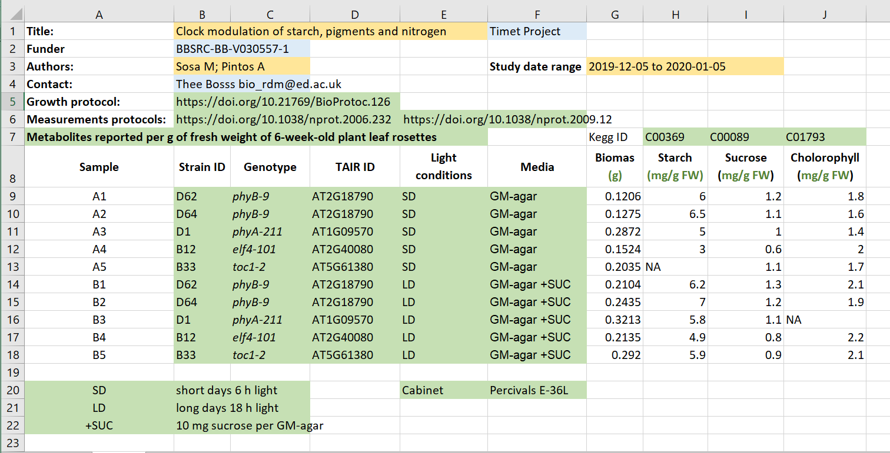
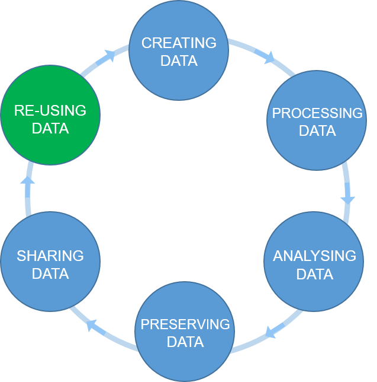

Content from Welcome
Last updated on 2025-01-27 | Edit this page
Estimated time: 15 minutes
Overview
Questions
- Who are we and what are we going to learn?
Objectives
- Introduce ourselves and the course
- Setup our learning platform
- Better research by better sharing
Introductions
Testimonial
Introductions set the stage for learning.
-– Tracy Teal, Former Executive Director, The Carpentries
Hello everyone, and welcome to the FAIR in biological practice workshop. We are very pleased to have you with us.
Today’s Trainers
To begin the class, each Trainer should give a brief introduction of themselves.
Now we would like to get to know all of you.
Who are you and what are your expectations from the workshop
Please introduce yourself shortly and tell us:
- Why are you taking this course?
- What goals do you have for the follwing days?
Better research by better sharing
For many of us, data management or output sharing in general are considered a burden rather than a useful activity. Part of the problem is our bad timing and lack of planning.
Data management is a continuous process
 Figure credits:
Tomasz Zielinski and Andrés Romanowski
Figure credits:
Tomasz Zielinski and Andrés Romanowski
When should you engage in data sharing and open practices?
- Data management should be done throughout the duration of your project.
- If you wait till the end, it will take a massive effort on your side and will be more of a burden than a benefit.
- The overheads of making data suitable for sharing at each stage of data life-cycle are small comparing to the other actions involved
- Taking the time to do effective data management will help you understand your data better and make it easier to find when you need it (for example when you need to write a manuscript or a thesis!).
- All the practices that enable others to access and use your outcomes directly benefit you and your group
In this workshop we will show you how you can plan and do your research in a way that makes your outputs readily available for re-use by others.
Our agenda:
Day 1 We will start with explaining Open Science principles and what the benefits are of being open for you and society. Then we will talk about FAIR principles which define steps you/we should take so that our “shared” outputs are of value. We will finish with a brief introduction to metadata and ontologies, and how to be precise to deliver FAIR outputs.
Day 2 We will show you how to use metadata in Excel, and the benefits of using online records for documenting experiments. We will talk about working and organizing files and appropriate file naming conventions using Excel or CSV tables to store and document data.
Day 3 We will introduce Jupyter notebooks as a tool for reusable data analysis. We will talk about Version Control. We will teach how to describe your projects using simple text files or customized templates.
Day 4 We will show you how public repositories make your outputs accessible and reusable. We will consolidate our knowledge of FAIR ready data management and what other tools can help you during your research.
Online workshop specifics
Our learning tools
Before we begin let’s explain how to use the tools:
- Raising hands
- Yes/No sticker
- Chatroom for links not for jokes
- Breakout rooms, leaving and rejoining
- using pad, answering questions in pad
- where to find things If needed, check the pre workshop setup, ask to report problems and help at a break or after the session.
Key Points
- Do not be shy
- Be nice
- Remember, you can do better research if you plan to share your outputs!
Content from Introduction to Open Science
Last updated on 2025-01-27 | Edit this page
Estimated time: 55 minutes
Overview
Questions
- What is Open Science?
- How can I benefit from Open Science?
- Why has Open Science become a hot topic?
Objectives
- Identify parts of the Open Science movement, their goals and motivations
- Explain the main benefits of Open Science
- Recognize the barriers and risks in the adoption of Open Science practices
(16 min teaching)
Science works best by exchanging ideas and building on them. Most efficient science involves both questions and experiments being made as fully informed as possible, which requires the free exchange of data and information.
All practices that make knowledge and data freely available fall under the umbrella-term of Open Science/Open Research. It makes science more reproducible, transparent, and accessible. As science becomes more open, the way we conduct and communicate science changes continuously.
What is Open Science
Open science is the movement to make scientific research (including publications, data, physical samples, and software) and its dissemination accessible to all levels of an inquiring society, amateur or professional.
Open Science represents a new approach to the scientific process based on cooperative work and new ways of diffusing knowledge by using digital technologies and new collaborative tools
Open science is transparent and accessible knowledge that is shared and developed through collaborative networks.
Characteristics:
- Using web-based tools to facilitate information exchange and scientific collaboration
- Transparency in experimental methodology, observation, and collection of data
- Public availability and reusability of scientific data, methods and communications
What is the Open Science movement?
Sharing of information is fundamental for science. This began at a significant scale with the invention of scientific journals in 1665. At that time this was the best available alternative to critique & disseminate research, and foster communities of like-minded researchers.
Whilst this was a great step forward, the journal-driven system of science has led to a culture of ‘closed’ science, where knowledge or data is unavailable or unaffordable to many.
The distribution of knowledge has always been subject to improvement. Whilst the internet was initially developed for military purposes, it was hijacked for communication between scientists, which provided a viable route to change the dissemination of science.
The momentum has built up with a change in the way science is communicated to reflect what research communities are calling for – solutions to the majority of problems (e.g. impact factors, data reusability, reproducibility crisis, trust in the public science sector etc…) that we face today.
Open Science is the movement to increase transparency and reproducibility of research, through using the open best practices.

After Gema Bueno de la Fuente
Open Science Building Blocks
Open Access: Research outputs hosted in a way that make them accessible for everyone. Traditionally Open Access referred to journal articles, but now includes books, chapters or images.
Open Data: Data freely and readily available to access, reuse, and share. Smaller data sets were often accessible as supplemental materials by journals alongside articles themselves. However, they should be hosted in dedicated platforms for more convenient and better access.
Open Software: Software where the source code is made readily available; others are free to use, change, and share. Some examples of these including the coding language and supporting software R and RStudio, as well as image analysis software such as Fiji/ImageJ.
Open Notebooks: Lab & notebooks hosted online, readily accessible to all. These are popular among some of the large funding bodies and allow anyone to comment on any stage of the experimental record.
Open Peer Review: A system where peer review reports are published alongside the body of work. This can include reviewers’ reports, correspondence between parties involved, rebuttals, editorial decisions etc…
Citizens Science: Lay people become involved in scientific research, most commonly in data collection or image analysis. Platforms such as zooniverse.org help connect projects with lay people interested in playing an active role in research, which can help generate and/or process data which would otherwise be unachievable by one single person.
Scientific social networks: Networks of researchers, which often meet locally in teams, but are also connected online, foster open discussions on scientific issues. Online, many people commonly use traditional social media platforms for this, such as Twitter, Instagram, various sub-reddits, discussion channels on Slack/Discord etc…, although there are also more dedicated spaces such as researchgate.net.
Open Education resources: Educational materials that are free for anyone to access and use to learn from. These can be anything from talks, instructional videos, and explanations posted on video hosting websites (e.g. YouTube), to entire digital textbooks written and then published freely online.
Citizen science: Citizen participation of various stages of research process from project funding to collecting and analysing data.
Exercise 1: Benefits of Open Science (5 min)
Being open has other outcomes/consequences beyond giving the free access to information. For example, Open educational resources:
- enables collaborative development of courses
- improves teachers/instructors skills by sharing ideas
Select one or two of the following OS parts:
- Open Access
- Open Data
- Open Software
- Open Notebooks
- Open Peer Review
and discuss what are the benefits or what problems are solved by adaption of those Open initiatives.
Possible benefits and consequences for each part:
Open Access
- speed of knowledge distribution
- leveling field for underfunded sites which otherwise wouldn’t be able to navigate the paywall
- prevent articles being paid for ‘thrice’ (first to produce, second to publish, third to access) by institutions.
- greater access to work by others, increasing chance for exposure & citations
- access to work by lay audiences, thus increases social exposure of research
Open Data
- ensures data isn’t lost overtime - reusability
- acceleration of scientific discovery rate
- value for money/reduced redundancy
- permits statistical re-analysis of the data to validate findings
- gives access to datasets which were not published as papers (e.g. negative results, large screening data sets)
- provides an avenue to generate new hypotheses
- permits combination of multiple data sources to address questions, provides greater power than a single data source
Open Software
- great source to learn programming skills
- the ability to modify creates a supportive community of users and rapid innovation
- saves time
- faster bug fixes
- better error scrutiny
- use of the same software/code allows better reproducibility between experiments
- need funds to maintain and update software
Open Notebooks
- 100% transparent science, allowing input from others at early stages of experiments
- source of learning about the process of how science is actually conducted
- allows access to experiments and data which otherwise never get published
- provides access to ‘negative’ results and failed experiments
- anyone, anywhere around the world, at any time, can check in on projects, including many users simultaneously
- possibility of immediate feedback
- thorough evidence of originality of ideas and experiments, negating effect of ‘scooping’
Open Peer Review
- visibility leads to more constructive reviews
- mitigates against editorial conflicts of interest and/or biases
- mitigates against reviewers conflicts of interest and/or biases
- allows readers to learn/benefit from comments of the reviewers
Open Educational Materials
- Foster collaboration between educators/others
- Show clearly how method was taught (e.g. Carpentries materials) which can be reproduces anywhere, anytime
- protects materials from becoming technologically obsolete
- authors preparing the material or contribute all earn credit (e.g. GitHub)
- recycle animations and material that is excellent (why reinvent the wheel?)
Motivation: Money (8 min teaching)
One has to consider the moral objectives that accompany the research/publication process: charities/taxpayers pay to fund research, these then pay again to access the research they already funded.
From an economic point of view, scientific outputs generated by public research are a public good that everyone should be able to use at no cost.
According to EU report “Cost-benefit analysis for FAIR research data”, €10.2bn is lost every year because of not accessible data (plus additional 16bn if accounting for re-use and research quality).
The goals of Open Science is to make research and research data available to e.g. charities/taxpayers who funded this research.
COAlition S, a group of national research funding organisations backed by the European Commission and the European Research Council, is a big driver trying to get rid of the paywalls that our research is sat behind. They announced Plan S, an initiative to make research publications fully free at the point of access, meaning that all research funded by public funding bodies must be published Open Access from 2021 onwards.
Open Access (a successful example)
The majority of larger UK and other countries’ funding bodies are now making Open Access publication conditional upon funding.
The initiative is known as Plan S, which requires “resulting publications available immediately (without embargoes) and under open licences, either in quality Open Access platforms or journals or through immediate deposit in open repositories that fulfil the necessary conditions.”
Exact requirements differ between funding bodies, with the minimum requirement being that a copy be deposited with your home institution.
Details of funding bodies and their involvement and requirements can be found at Plan S/cOAlition S. There is also a cOAlition S journal checker tool to assess compliance being developed. The Directory of Open Access Journals (DOAJ) is a tool to find which journals are Open Access.
Motivation: Reproducibility
The inherited transparency of Open Science and the easy access to data, methods and analysis details naturally help to address the Reproducibility crisis. The openness of scientific communications and of the actual process of evaluation of the research (Open Peer Review) increase confidence in the research findings.
Personal motivators
Open Science is advantageous to many parties involved in science (including researcher community, funding bodies, the public even journals), which is leading to a push for the widespread adoption of Open Science practices.
Large UK funding bodies such as The Wellcome Trust are big supporters of Open Science. We can see with the example of Open Access, that once enforced by funders (the stick) there is a wide adoption. But what about the personal motivators, the carrots.
Exercise 2: Personal benefits of being “open” (4 min)
Below are some personal benefits to adopting Open Science practices. Read through them which of them are the strongest motivators for you. Select two the most important/attractive for you and mark them with +1, select the two least important for you and mark them with 0
- receive higher citations
- complying with funders’ policies
- get extra value from your work (e.g. collaborators, reuse by modellers, ML specialists)
- demonstrate research impact
- save own time (reproducibility but also communication overhead)
- become pioneers
- distinguish yourself from the crowd
- plan successful research proposals
- gain valuable experience
- form community
- increased speed and/or ease of writing papers
- speed up and help with peer review
- build reputation and presence in the science community
- evidence of your scientific rigour and work ethic
- avoid embarrassment/disaster when you cannot reproduce your results
Can you think of other benefits? How personal benefits of Open Science compare to the benefits for the (scientific) society?
(3 min teaching)
The main difference between the public benefits of Open Science practices and the personal motivators of outputs creators, that the public can benefit almost instantly from the open resources. However, the advantages for data creator comes with a delay, typically counted in years. For example, building reputation will not happen with one dataset, the re-use also will lead to citations/collaboration after the next research cycle.
Barriers and risks of OS movement:
Exercise 3: Why we are not doing Open Science already (4 min)
Discuss Open Science barriers, mention the reasons for not already being open:
- sensitive data (anonymising data from administrative health records can be difficult)
- IP
- misuse (fake news)
- lack of confidence (the fear of critics)
- lack of expertise
- the costs in $ and in time
- novelty of data
- it is not mandatory
- lack of credit (publishing negative results is of little benefit to you)
(9 min teaching)
It may seem obvious that we should adopt open science practices, but there are associated challenges with doing so.
Sensitivity of data is sometimes considered a barrier. Shared data needs to be compliant with data privacy laws, leading many to shy away from hosting it publicly. Anonymising data to desensitise it can help overcome this barrier.
The potential for intellectual property on research can dissuade some from adopting open practices. Again, much can be shared if the data is filtered carefully to protect anything relating to intellectual property.
Another risk could be seen with work on Covid19: pre-prints. A manuscript hosted publicly prior to peer review, may accelerate access to knowledge, but can also be misused and/or misunderstood. This can result in political and health decision making based on faulty data, which is counter to societies’ best interest.
One concern is that opening up ones data to the scientific community can lead to the identification of errors, which may lead to feelings of embarrassment. However, this could be considered an upside - we should seek for our work to be scrutinized and errors to be pointed out, and is the sign of a competent scientist. One should rather have errors pointed out rather than risking that irreproducible data might cause even more embarrassment and disaster.
One of the biggest barriers are the costs involved in “being Open”. Firstly, making outputs readily available and usable to others takes time and significant effort. Secondly, there are costs of hosting and storage. For example, microscopy datasets reach sizes in terabytes, making such data accessible for 10 years involves serious financial commitment.
Get involved
Thankfully, incentive structures are beginning to support Open Science practices:
- Universities signing up to the Declaration on Research Assessment (DORA).
- Wellcome Trust funding proposals that increase Open Science
- Wellcome Trust asked for description of Open Science activities in the grant application
You do not want to be left behind!
Where to next
Further reading/links:
Exercise 4: Open Science Quiz (5 min + runs over break)
Which of the following statements about the OS movement are true/false?
- Open Science relies strongly on the Internet
- Open Access eliminates publishing costs
- Open Data facilitates re-use
- Open Data can increases confidence in research findings
- In Open Peer Review, readers vote on publication acceptance
- Open Notebooks improve reproducibility
- Open Notebooks can create patenting issues
- Open Access permits the whole society to benefit from scientific findings
- Citizen Science engages the public in the research process
- Citizen Science can help get ecological data quickly
- Open Science relies strongly on the Internet T
- Open Access eliminates publishing costs F
- Open Data facilitates re-use T
- Open Data increases confidence in research findings T
- In Open Peer Review, readers vote on publication acceptance F
- Open Notebooks improve reproducibility T
- Open Notebooks can create patenting issues T*
- Open Access permits the whole society to benefit from scientific findings T
- Citizen Science engages the public in the research process T
- Citizen Science can help get ecological data quickly T
Attribution
Content of this episode was adapted from:
Key Points
- Open Science increases transparency in research
- Publicly funded science should be publicly available
- While both You and the research community benefit from open practices, they are costs involved in making outputs open
Content from Being FAIR
Last updated on 2025-01-27 | Edit this page
Estimated time: 60 minutes
Overview
Questions
- How to get more value from your own data?
- What are the FAIR guidelines?
- Why being FAIR matters?
Objectives
- Recognize typical issues that prevent data re-use
- Understand FAIR principles
- Know steps for achieving FAIR data
(7 min teaching)
We have seen how Open practices can benefit both scientific community as a whole and individual practitioner. The wide adoption of Open Access principles has resulted in an easy access to recent biomedical publications. Unfortunately, the same cannot be said about data and software that accompanies those publications.
What is data
Although scientific data is a very broad term, we still encounter groups who (wrongly) believe they do not have data! Data does not mean Excel files with recorded measurements from a machine. Data also includes:
- images, not only from microscopes
- information about biological materials, like strain or patient details
- biological models
- recipes, laboratory and measurement protocols
- scripts, analysis procedures, and custom software can also be considered data However, there are specific recommendations on how to deal with code.
Let’s have a look how challenging it can be to access and use data from published biological papers.
Exercise 1: Impossible protocol (4 min)
You need to do a western blot to identify Titin proteins, the largest proteins in the body, with a molecular weight of 3,800 kDa. You found an antibody sold by Sigma Aldrich that has been validated in western blots and immunofluorescence. Sigma Aldrich lists the Yu et al., 2019 paper as reference.
Find details of how to separate and transfer this large protein in the reference paper.
- Hint 1: Methods section has a Western blot analysis subsection.
- Hint 2: Follow the references.
Would you say that the methods was Findable? Accessible? Reusable?
- Ref 17 will lead you to this paper, which first of all is not Open Access
- Access the paper through your institutions (if you can) and find the ‘Western Blotting’ protocol on page 232 which will show the following (Screenshot from the methods section from Evilä et al 2014):

- “Western blotting were performed according to standard methods.” - with no further reference to these standard methods, describing these methods, or supplementary material detailing these methods
- This methodology is unfortunately a true dead end and we thus can’t easily continue our experiments!
Impossible numbers
Ikram 2014 paper contains data about various metabolites in different accessions (genotypes) of Arabidopsis plant. You would like to calculate average nitrogen content in plants grown under normal and nitrogen limited conditions. Please calculate the average (over genotypes) nitrogen content for the two experimental conditions.
- Hint 1. Data are in Supplementary data
- Hint 2. Search for nitrogen in paper text to identify the correct data column.
- Finding the right table and column containing the relevant data is already problematic as the headers are obscured so they need to decoded using manuscript
- Data in pdf table so they cannot be readily used in calculations
- Depending on the software used to open (and the way the pdf was
created), the local machine international settings, copying the data
into Excel can bring unexpected results

Data needs parsing after coping to Excel
The same data copied to Excel with polish locale has been converted to dates - In general pdf tables cannot be read programaticaly from R or Python.
Impossible numbers
Systems biologists usually require raw numerical data to build their models. Take a look at the following example: Try to find the numerical data behind the graph shown in Figure 6 which demonstrates changes in levels of phytochrome proteins from Sharrock RA and Clack T, 2002.
- Hint 1: Materials and methods describe quantification procedure
- Hint 2: Supporting Information or Supplementary Materials sections often contain data files.
How easy it was?
Impossible resource/link
RNA-seq (transcriptomics) data is usually deposited in online repositories such as SRA or ArrayExpress. Your task is to find the link to the repository of the raw RNA-seq data in Li et al., Genes Dev. 2012. Can you find it anywhere?
(29 min teaching)
The above examples illustrate the typical challenges in accessing research data and software. Firstly, data/protocols/software often do not have an identity of their own, but only accompany a publication. Second, they are not easily accessible or reusable, for example, all the details are inside one supporting information PDF file. Such file includes “printed” numerical table or even source code, both of which need to be “re-typed” if someone would like to use them. Data are shared in proprietary file format specific to a particular vendor and not accessible if one does not have a particular software that accompanies the equipment. Finally, data files are provided without detailed description other than the whole article text.
In our examples, the protocol was difficult to find (the loops), difficult to access (pay wall), and not reusable as it lacked the necessary details (dead-end). In the second example the data were not interoperable and reusable as their were only available as a figure graph.
To avoid such problems FAIR principles were designed.
 After SangyaPundir
After SangyaPundir
{kind=link}
FAIR Principles
In 2016, the FAIR Guiding Principles for scientific data management and stewardship were published in Scientific Data. The original guideline focused on “machine-actionability” - the ability of computer systems to operate on data with minimal human intervention. However, now the focus has shifted to making data accessible from a human perspective, and not an automated one (mostly due to the lack of user friendly tools that could help deal with standards and structured metadata).
Findable: Easy to find data and metadata for both humans and computers. Automatic and reliable discovery of datasets and services depends on machine-readable persistent identifiers (PIDs) and metadata.
Accessible: (Meta)data should be retrievable by their identifier using a standardized and open communications protocol (including authentication and authorisation). Metadata should be available even when the data are no longer available.
Interoperable: Data should be able to be combined with and used with other data or tools. The format of the data should be open and interpretable for various tools. It applies both to data and metadata, (meta)data should use vocabularies that follow FAIR principles.
Re-usable: FAIR aims at optimizing the reuse of data. Metadata and data should be well-described so that they can be replicated and/or combined in different settings. The reuse of (meta)data should be stated with clear and accessible license(s).
FAIR in biological practice
Findable & Accessible
Deposit data to an external, reputable public repository.
Repositories provide persistent identifiers (PIDs), catalogue options, advanced metadata searching, and download statistics. Some repositories can also host private data or provide embargo periods, meaning access to all data can be delayed.
There are general “data agnostic” repositories, for example:
Or domain specific, for example:
- UniProt protein data,
- GenBank sequence data,
- MetaboLights metabolomics data
- GitHub for code.
We will cover repositories in more details in a later episode.
What are persistent identifiers (PIDs)
A persistent identifier is a long-lasting reference to a digital resource. Typically it has two components:
- a service that locates the resource over time even when its location changes
- and a unique identifier (that distinguishes the resource or concept from others).
Persistent identifiers aim to solve the problem of the persistence of accessing cited resource, particularly in the field of academic literature. All too often, web addresses (links) changes over time and fail to take you to the referenced resource you expected.
There are several services and technologies (schemes) that provide PIDs for objects (whether digital, physical or abstract). One of the most popular is Digital Object Identifier (DOI), recognizable by the prefix doi.org in the web links. For example: https://doi.org/10.1038/sdata.2016.18 resolves to the location of the paper that describes FAIR principles.
Public repositories often maintain web addresses of their content in a stable form which follow the convention http://repository.adress/identifier; these are often called permalinks. For well establish services, permalinks can be treated as PIDs.
For example: http://identifiers.org/SO:0000167 resolves to a page defining promoter role, and can be used to annotate part of a DNA sequence as performing such a role during transcription.
Interoperable
- Use common file formats (can be domain specific)
- Always use .csv or .xls files for numerical data. Never share data tables as word or pdf,
- Provide underlying numerical data for all plots and graphs
- Convert proprietary binary formats to the open ones. For example convert Snapgene to Genbank, microscopy multistack images to OME-TIFF
Reusable
- Describe your data well / provide good metadata
- write README file describing the data
- user descriptive column headers for the data tables
- tidy data tables, make them analysis friendly
- provide as many details as possible (prepare good metadata)
- use (meta)data formats (e.g. SBML, SBOL)
- follow Minimum Information Standards
Describing data well is the most challenging part of the data sharing process. We will cover this in more detail later on.
- Attach license files. Licenses explicitly declare conditions and terms by which data and software can be re-used. Here, we recommend:
- for data Creative Commons Attribution (CC BY) license,
- for code a permissive open source license such as the MIT, BSD, or Apache license.
Copyright and data
Software code (the text) automatically gets the default copyright protection which prevents others from copying or modifying it. Only by adding the explicit licence you can permit re-use by others.
Data, being factual, cannot be copyrighted. So why, do we need a license?
While the data itself cannot be copyrighted, the way how it is presented can be. The extend to which it is protected needs ultimately to be settled by the court.
The “good actors” will restrain from using your data to avoid “court” risks. The “bad actors” will either ignore the risk or can afford the lawyers fees.
Exercise 2: Example of FAIR data (4 min)
Zenodo is general data repository. Have a look at the dataset record with COVID-19 data: https://doi.org/10.5281/zenodo.6339631
Identify how each of F.A.I.R principles has been met.
Hint: navigate to linked github record to easily access the README
file
- The dataset is identified by a PID (doi). It can be found by its ID. It has human accessible description and keywords, both suitable for discovery.
- Data can be downloaded using standard browser.
- Dataset entries are in common formats: csv, R, jpg
- Dataset is linked to publication, github record and project website
- The record contains rich metadata in README file, including files structure and the detailed tables formats.
- Data are released under open Creative Commons Attribution Licence
Exercise 2 (too)Advanced: Example of FAIR data (4 min)
Depending on the audience this version of the excercise may present information overload.
Uniprot is a high-quality and freely accessible resource of protein sequence and functional information. Have a look at the record of the GFP protein: https://www.uniprot.org/uniprot/P42212
Identify how each of F.A.I.R principles has been met.
Alternative records to check: https://www.ncbi.nlm.nih.gov/nuccore/AH002877.2 https://synbiohub.org/public/bsu/SubtilinReceiver_spaRK_separated/1
All entries are uniquely identified by a stable URL (‘F’), that provides access to the record in a variety of formats including a web page, plain-text, FASTA, and GENBANK (‘A’, ‘I’). The record contains rich metadata (‘R’) that is both human-readable (HTML) and machine-readable (text) (‘I’). There search options that uses both record IDs and the rich metadata (‘F’). The graphical pane shows how the data are re-usable. Metadata uses ontological terms (e.g. taxonomy) and shared vocabularies (e.g. genbank features) (‘I’). Interlinking with other databases: GenBank, Pubmed (‘I’, ‘R’) enabling automated retrieval of records and cross-referencing information.
Exercise 3: FAIR and You (3 min)
The FAIR acronym is sometimes accompanied with the following labels:
- Findable - Citable
- Accessible - Trackable and countable
- Interoperable - Intelligible
- Reusable - Reproducible
Using those labels as hints discuss how FAIR principles directly benefit you as the data creators.
- Findable data have their own identity, so they can be easily cited and secure the credits to the authors
- Data accessibility over the Internet using standard protocols can be easily monitored (for example using Google analytics). This results in metrics on data popularity or even geo-locations of data users.
- Interoperable data can benefit the future you, for example you will be able to still read your data even when you no longer have access to the specialized, vendor specific software with which you worked with them before. Also the future you may not remember abreviations and ad-hoc conventions you used before (Intelligible).
- Well documented data should contain all the details necessary to reproduce the experiments, helping the future you or someone taking over from you in the laboratory.
- Saves time and money.
FAIR vs Open Science (3 min teaching)
FAIR does not mean Open. Actually, FAIR guideline only requires that the metadata record is always accessible. For example, the existence of the data can be known (their metadata), the data can have easy to use PID to reference them, but the actual data files can only be downloaded after the login and authorization.
However, if data are already in the FAIR form, i.e. accessible over the internet, in interoperable format and well documented, then it is almost effortless to “open” the dataset and make it available to the whole public. The data owner can do it any time when he no longer perceives oppening as a risk.
At the same time, Open data which does not follow FAIR guidelines have little value. If they are not well described, not in open formats then they are not going to be re-used even if they were made “open” by posting them on some website.
Exercise 4: FAIR Quiz (5 min - run through break)
Which of the following statements is true/false (T or F).
- F in FAIR stands for free.
- Only figures presenting results of statistical analysis need underlying numerical data.
- Sharing numerical data as a .pdf in Zenodo is FAIR.
- Sharing numerical data as an Excel file via Github is not FAIR.
- Group website is a good place to share your data.
- Data from failed experiments are not re-usable.
- Data should always be converted to Excel or .csv files in order to be FAIR.
- A DOI of a dataset helps in getting credit.
- FAIR data are peer reviewed.
- FAIR data accompany a publication.
- F in FAIR stands for free. F
- Only figures presenting results of statistical analysis need underlying numerical data. F
- Sharing numerical data as a .pdf in Zenodo is FAIR. F
- Sharing numerical data as an Excel file via Github is not FAIR. F
- Group website is a good place to share your data. F
- Data from failed experiments are not re-usable. F
- Data should always be converted to Excel or .csv files in order to be FAIR. F
- A DOI of a dataset helps in getting credit. T
- FAIR data are peer reviewed. F
- FAIR data accompany a publication. F
Key Points
- FAIR stands for Findable Accessible Interoperable Reusable
- FAIR assures easy reuse of data underlying scientific findings
Content from Intellectual Property, Licensing and Openness
Last updated on 2025-01-27 | Edit this page
Estimated time: 20 minutes
Overview
Questions
- What is intellectual property?
- Why should I consider IP in Open Science?
Objectives
- Timeline matters for legal protection
- Understand what can and cannot be patented
- Understand what licenses to use for re-use of data and software
(13 min teaching)
Open Science and Intellectual property
Callout
This section is tailored to the EU and UK.
Intellectual property (IP) is something that you create using your mind - for example, a story, an invention, an artistic work or a symbol.
The timeline of “opening” matters when one seeks legal protection for his IP.
For example, patents are granted only for inventions that are new and were not known to the public in any form. Publishing in a journal or presenting in a conference information related to the invention completely prevents the inventor from getting a patent!
In our opinion, you are more likely to benefit from new collaborations, industrial partnerships, consultations which are acquired by openness, than from patent related royalties.
(Optional) Intellectual property protection
This section is tailored to the EU and UK.
You can use a patent to protect your (technical) invention. It gives you the right to take legal action against anyone who makes, uses, sells or imports it without your permission.
Discoveries, mathematical methods, computer programs and business methods as such are not regarded as inventions. Surgical and therapeutic procedures, diagnostic methods and new plant or animal varieties are completely excluded from patentability.
Patents are granted only for inventions that are new and were not known to the public in any form. Publishing in a journal or presenting in a conference information related to the invention completely prevents the inventor from getting a patent!
In principle, software cannot be patented. However, it is a “no but yes” situation, and a software patent are being granted. It is usually, settled by the court for each case.
Software code is copyrighted. Copyright prevents people from:
- copying your code
- distributing copies of it, whether free of charge or for sale.
Data cannot be patented, and in principle, it cannot be copyrighted. It is not possible to copyright facts!
However, how data are collated and presented (especially if it is a database), can have a layer of copyright protection. Deciding what data needs to be included in a database, how to organize the data, and how to relate different data elements are all creative decisions that may receive copyright protection. Again, it is often a case by case situation and may come down to who has better lawyers.
After: UK Government, Intellectual Property European Patent Office, Inventor’s Handbook
Exercise 1: Checking common licenses (5 min + discussion)
Open CC BY license summary https://creativecommons.org/licenses/by/4.0/ is it clear how you can use the data under this licence and why it is popular in academia?
Check the MIT license wording: https://opensource.org/licenses/MIT is it clear what you can do with software code under this licence?
Compare the full wording of CC BY https://creativecommons.org/licenses/by/4.0/legalcode can you guess why the MIT licence is currently one of the most popular for open source code?
- CC BY license states material can be reproduced, shared, in whole or in part, unless where exceptions and limitations are stated. Attributions must be made to the Licensor.
- MIT license states that Software can by used without restriction (to copy, modify, publish, distribute etc…)
- The MIT license is short, to the point and optimised for software developers as it offers flexibility.
Key Points
- A license is a promise not to sue - therefore attach license files
- For data use Creative Commons Attribution (CC BY) license (CC0 is even more permissive)
- For code use open source licenses such as MIT, BSD, or Apache license
Content from Introduction to metadata
Last updated on 2025-01-27 | Edit this page
Estimated time: 25 minutes
Overview
Questions
- What is metadata?
- What do we use metadata for?
Objectives
- Recognise what metadata is
- Distinguish different types of metadata
- Understand what makes metadata interoperable
- Know how to decide what to include in metadata
(5 min teaching)
What is (or are) metadata?
Simply put, metadata is data about the data. Sound confusing? Lets clarify: metadata is the description of data. It allows deeper understanding of data and provides insight for its interpretation. Hence, your metadata should be considered as important as your data. Further, metadata plays a very important role in making your data FAIR. It should be continuously added to your research data (not just at the beginning or end of a project!). Metadata can be produced in an automated way (e.g. when you capture a microscopy image usually the accompanying software saves metadata as part of it) or manually.
Let’s take a look at an example:This is a confocal microscopy image of a C. elegans nematode
strain used as a proteostasis model (Pretty! Isn’t it?). The image is
part of the raw data associated to Goya et al.,
2020, which was deposited in a Public Omero Server
Project
Figure1
set
Figure credits: María Eugenia Goya
. What information can you get from the image, without the associated description (metadata)?
Let’s see the associated metadata of the image and the dataset to which it belongs:
Image metadata
Name: OP50 D10Ad_06.czi Image ID: 3485 Owner: Maria Eugenia Goya ORCID: 0000-0002-5031-2470
Acquisition Date: 2018-12-12 17:53:55 Import Date: 2020-04-30 22:38:59 Dimensions (XY): 1344 x 1024 Pixels Type: uint16 Pixels Size (XYZ) (µm): 0.16 x 0.16 x 1.00 Z-sections/Timepoints: 56 x 1 Channels: TL DIC, TagYFP ROI Count: 0
Tags: time course; day 10; adults; food switching; E. coli OP50; NL5901; C. elegans
Dataset metadata
Name: Figure2_Figure2B Dataset ID: 263 Owner: Maria Eugenia Goya ORCID: 0000-0002-5031-2470
Description: The datasets contains a time course of α-syn aggregation in NL5901 C. elegans worms after a food switch at the L4 stage:
E. coli OP50 to OP50 Day 01 adults Day 03 adults Day 05 adults Day 07 adults Day 10 adults Day 13 adults
E. coli OP50 to B. subtilis PXN21 Day 01 adults Day 03 adults Day 05 adults Day 07 adults Day 10 adults Day 13 adults
Images were taken at 6 developmental timepoints (D1Ad, D3Ad, D5Ad, D7Ad, D10Ad, D13Ad)
* Some images contain more than one nematode.
Each image contains ~30 (or more) Z-sections, 1 µmeters apart. The TagYFP channel is used to follow the alpha-synuclein particles. The TL DIC channel is used to image the whole nematode head.
These images were used to construct Figure 2B of the Cell Reports paper (https://doi.org/10.1016/j.celrep.2019.12.078).
Creation date: 2020-04-30 22:16:39
Tags: protein aggregation; time course; E. coli OP50 to B. subtilis PXN21; food switching; E. coli OP50; 10.1016/j.celrep.2019.12.078; NL5901; C. elegans
This is a lot of information!
Types of metadata
According to How to FAIR we can distinguish between three main types of metadata:
- Administrative metadata: data about a project or resource that are relevant for managing it; E.g. project/resource owner, principal investigator, project collaborators, funder, project period, etc. They are usually assigned to the data, before you collect or create them.
- Descriptive or citation metadata: data about a dataset or resource that allow people to discover and identify it; E.g. authors, title, abstract, keywords, persistent identifier, related publications, etc.
- Structural metadata: data about how a dataset or resource came about, but also how it is internally structured. E.g. the unit of analysis, collection method, sampling procedure, sample size, categories, variables, etc. Structural metadata have to be gathered by the researchers according to best practice in their research community and will be published together with the data.
Descriptive and structural metadata should be added continuously throughout the project.
Exercise 1: Identifying metadata types (4 min)
Here we have an excel spreadsheet that contains project metadata for
a made-up experiment of plant metabolites  Figure credits: Tomasz
Zielinski and Andrés Romanowski
Figure credits: Tomasz
Zielinski and Andrés Romanowski
In groups, identify different types of metadata (administrative, descriptive, structural) present in this example.
- Administrative metadata marked in blue
- Descriptive metadata marked in orange
- Structural metadata marked in green Figure credits: Tomasz Zielinski and Andrés Romanowski
(6 min teaching)
Where does data end and metadata start?
What is “data” and what is “metadata” can be a matter of perspective: Some researchers’ metadata can be other researchers’ data.
For example, a funding body is categorised as typical administrative metadata, however, it can be used to calculate numbers of public datasets per funder and then used to compare effects of different funders’ policies on open practices.
Adding metadata to your experiments
Good metadata are crucial for assuring re-usability of your outcomes. Adding metadata is also a very time-consuming process if done manually, so collecting metadata should be done incrementally during your experiment.
As we saw metadata can take many forms from as simple as including a ReadMe.txt file, by embedding them inside the Excel files, to using domain specific metadata standards and formats.
But,
- What should be included in metadata?
- What terms should be used in descriptions?
For many assay methods and experiment types, there are defined recommendations and guidelines called Minimal Information Standards.
Minimal Information Standard
The minimum information standard is a set of guidelines for reporting data derived by relevant methods in biosciences. If followed, it ensures that the data can be easily verified, analysed and clearly interpreted by the wider scientific community. Keeping with these recommendations also facilitates the foundation of structuralized databases, public repositories and development of data analysis tools. Individual minimum information standards are brought by the communities of cross-disciplinary specialists focused on issues of the specific method used in experimental biology.
Minimum Information for Biological and Biomedical Investigations (MIBBI) is the collection of the most known standards.
FAIRSharing offers excellent search service for finding standards
Exercise 2: Minimal information standard example (5 min)
Look at Minimum Information about a Neuroscience
Investigation (MINI) Electrophysiology Gibson, F.
et al. Nat Prec (2008). which contains recommendations for reporting
the use of electrophysiology in a neuroscience study.
(Neuroscience (or neurobiology) is the scientific study of the
nervous system).
Scroll to Reporting requirement and decide which of the points 1-8 are:
- important for understanding and reuse of data
- important for technical replication
- could be applied to other experiments in neuroscience
Possible answers:
- 2, 3, 4, 5, 6, 8a-b
- 3, 7
- 2, 3, 4, 5, 6
What if there are no metadata standards defined for your data / field of research?
Think about the minimum information that someone else (from your lab or from any other lab in the world) would need to know to be able to work with your dataset without any further input from you.
Think as a consumer of your data not the producer!
Exercise 3: What to include - discussion (4 minutes)
Think of the data you generate in your projects, and imagine you are going to share them.
What information would another researcher need to understand or reproduce your data (the structural metadata)?
For example, we believe that any dataset should have:
- a name/title
- its purpose or experimental hypothesis
Write down and compare your proposals, can we find some common elements?
Some typical elements are:
- biological material, e.g. Species, Genotypes, Tissue type, Age, Health conditions
- biological context, e.g. speciment growth, entrainment, samples preparation
- experimental factors and conditions, e.g. drug treatments, stress factors
- primers, plasmid sequences, cell line information, plasmid construction
- specifics of data acquisition
- specifics of data processing and analysis
- definition of variables
- accompanying code, software used (version nr), parameters applied, statistical tests used, seed for randomisation
- LOT numbers
Metadata and FAIR guidelines
Metadata provides extremely valuable information for us and others to be able to interpret, process, reuse and reproduce the research data it accompanies.
Because metadata are data about data, all of the FAIR principles i.e. Findable, Accessible, Interoperable and Reusable apply to metadata.
Ideally, metadata should not only be machine-readable, but also interoperable so that they can interlink or be reasoned about by computer systems.
Attribution
Content of this episode was adapted from:
Key Points
- Metadata provides contextual information so that other people can understand the data.
- Metadata is key for data reuse and complying with FAIR guidelines.
- Metadata should be added incrementally through out the project
Content from Being precise
Last updated on 2025-01-27 | Edit this page
Estimated time: 35 minutes
Overview
Questions
- How to make my metadata interoperable?
- How to avoid disambiguation?
Objectives
- Using public identifiers
- Understand difference between close vocabulary and ontology
- Finding ontology terms
(16 min teaching)
Being precise
If the metadata purpose is to help understand the data, it has to be done in a precise and “understandable” way i.e. it has to be interoperable. To be interoperable metadata should use a formal, accessible, shared, and broadly applicable terms/language for knowledge representation.
One of the easiest examples is the problem of author disambiguation.

After Libarary Carpentry FAIR Data
Open Researcher and Contributor ID (ORCID)
Have you ever searched yourself in pubmed and found that you have a doppelganger? So how can you uniquely associate something you created to just yourself and no other researcher with the same name?
ORCID is a free, unique, persistent identifier that you own and control—forever. It distinguishes you from every other researcher across disciplines, borders, and time.
ORCIDs of authors of this episode are:
You can connect your iD with your professional information—affiliations, grants, publications, peer review, and more. You can use your iD to share your information with other systems, ensuring you get recognition for all your contributions, saving you time and hassle, and reducing the risk of errors.
If you do not have an ORCID, you should register to get one!
Exercise 1: Public ID in action (3 min)
The Wellcome Open Research journal uses ORCID to identify authors.
Open one of our papers doi.org/10.12688/wellcomeopenres.15341.2 and have a look how public IDs such as ORCID can be used to interlink information.
If you have not done so yet, register yourself at ORCID*
ORCID is used to link to authors profiles which list their other publications.
ORCID provides the registry of researchers, so they can be precisely identified. Similarly, there are other registries that can be used to identify many of biological concepts and entities:
- species e.g. NCBI taxonomy
- chemicals e.g. ChEBI
- proteins e.g. UniProt
- genes e.g. GenBank
- metabolic reactions, enzymes e.g KEGG
BioPortal or NCBI
are good places to start searching for a registry or a term.
Exercise 2: Public ID in action 2 (3 min)
-
The second metadata example (the Excel table): contains two other types of public IDs.
Figure credits: Tomasz
Zielinski and Andrés Romanowski- Can you find the public IDs?
- Can you find the meaning behind those Ids?
Disambiguation (7 min teaching)
In academic disciplines we quickly run into problems of naming standards e.g.:
- Escherichia coli
- EColi
- E. coli
- E. Coli
- Kanamycin A
- Kanamycin
- Kanam.
- Kan.
In order to prevent such ambiguities applications provide interface that constraints users to pre-defined options, it controls the available vocabulary.
 Example of graphical user
interfaces with controlled vocabularies
Example of graphical user
interfaces with controlled vocabularies
Controlled Vocabulary
Definition: Any closed prescribed list of terms
Key Features:
- Terms are not usually defined
- Relationships between the terms are not usually defined
- the simplest form is a list
Example:
- E. coli
- Drosophila melanogaster
- Homo sapiens
- Mus musculus
- Salmonella
Use of controlled vocabulary (a list) can be organised hierarchically into a taxonomy, a system we know mostly from our species taxonomy.
Taxonomy
Definition: Any controlled vocabulary that is arranged in a hierarchy
Key Features:
- Terms are not usually defined
- Relationships between the terms are not usually defined
- Terms are arranged in a hierarchy
Example:
- Bacteria
- E. coli
- Salmonella
- Eucariota
- Mammalia
- Homo sapiens
- Mus musculus
- Insecta
- Drosophila melanogaster
Ontologies add a further dimension to controlled vocabularies and taxonomy. They allow us to conceptualise relationships between the established hierarchy which helps with more sophisticated data queries and metadata searches.
Ontology
Definition: A formal conceptualisation of a specified domain
Key Features:
- Terms are DEFINED
- Relationships between the terms are DEFINED, allowing logical inference and sophisticated data queries
- Terms are arranged in a hierarchy
- expressed in a knowledge representation language such as RDFS, OBO, or OWL
Example:
- Bacteria
- E. coli
- Salmonella
- Eucariota — has_part —> nucleas
- Mammalia — has_part —> placenta
- Homo sapiens
- Mus musculus
- Insecta
- Drosophila melanogaster
Ontologies represent a standardised, formal naming system and define categories, properties and relationships between data. Ontologies allow to describe properties of a subject area and how they are related (e.g. taxonomy).

Ontologies allows automatic reasoning about the data, using the relations between the described terms. For example, in the picture above we can “deduce” that hippocampal astrocyte:
- it is type of cell as it one of its predecessor in the knowledge tree is cell (CL_0000000)
- it is located in the brain (UBERON_000955)
- it can perform axon regeneration (GO_0031103)
We could follow the term axon regeneration to find its definition and what it means, to have a better understanding of hippocampal astrocyte.
Ontologies are crucial for aggregation of information and finding suitable data. Imagine you are interested in gene expersions in glial cells. Using a free text search you would need to hope that data from astrocytes will be also tagged as glial cell, or you would need to specify all suptypes of glial cells like oligodendrocytes astrocytes. Ontologies permits to automatically expands such searches that they contain suitable domain.
The above figure presents also another aspect of using ontologies.
The terms are often referred to as:
PREFIX_ID e.g. CL_0002604
Prefix (CL, UB, UBERON, GO) will identify the ontology which defined the
term (Cell
Ontology for CL).
ID refers to particular term in the ontology.
Ontologies are encoded in standard, interoperable formats, which permitted creation of re-usable interfaces to access the described terms or browsing different ontologies. For example: https://bioportal.bioontology.org/]\(https://bioportal.bioontology.org/\) permits searching for suitable terms definitions in hundreds of ontologies.
Obo foundry is another useful tool that lists recommended ontologies.
Exercise 3: Exploring ontologies (with instructor)
Check the example of ontology records:
Check what type of information is available, explore the terms hierarchy, the visualization, the interlinked terms, mapping between different ontologies.
Exercise 4: Ontology tests
- The prefix CL stands for:
- Class ontology:
- Cell ontology:
- Cell line ontology
- The recommended ontology for chemical compounds is:
- cheminf
- chmo
- chebi
- Which terms captures both Alzheimer’s and Huntington’s diseases
- DOID_680
- DOID_1289
- DOID_0060090
3 b (hint try to see the tree in bioportal)
Attribution
Content of this episode was adapted from:
- BD2K Open Educational Resources: BDK14 Ontologies 101 Nicole Vasilevsky
Key Points
- Public identifiers and ontologies are key to knowledge discovery
- Automatic data aggregations needs standardised metadata formats and values
Content from (Meta)data in Excel
Last updated on 2025-01-27 | Edit this page
Estimated time: 55 minutes
Overview
Questions
- How to represent data in tables
Objectives
- Do’s and don’ts in Excel
- How good table organization can helps to re-use data
(2 min teaching)
Tables are one of the best forms of storing and representing information. That is why we find them almost everywhere, from a menu in a restaurant, a bank statement, to professional databases. No surprise then that we biologists love tables and we tend to predominantly use Excel.
Excel is easy to use, flexible and powerful, however, it often gives us too much freedom which leads to bad practices and difficult to re-use data and metadata.
Exercise 1: What can go wrong with data in Excel (4 min)
Have a look at the example data-file in Excel.

It contains data similar to the presented data before from experiments on plants in different light conditions. Imagine you need to work with this file.
- What do you find confusing?
- What would you try to clarify with the author before doing anything with the file?
- What will be the issues with calculation of: average biomas, biomas per genotype?
- Typically, more advanced data analysis is done programmatically, which requires either conversion to text format as csv, tsv format or using a library that reads Excel files and “kind of makes this conversion on the fly”. Save this file in a text format, close Excel and reopen the saved files. What has changed?
Have you seen similar tables? Do you believe this example is realistic and replicates real-life issues?
This file hopefully unrealistically exacerbates typical bad practices in Excel. 1+2. Some things that may be confusing:
- Why are there two tables, are the period measurement related to the metabolics i.e. same samples?
- Do colors in the period table have the same meaning? Seems no.
- Why can row 22 be read, whilst row 13 says error?
- What is the meaning of values in the media column?
- Are the genotypes the same in different blocks or not?
- What is the meaning behind bold text in the table?
- What is the definition of the terms/why are units missing/inconsistent?
- Before averaging the biomas weight, they need to get converted the same unit and the text needs to get replaced by the unit.
- Averaging per genotype needs manual selection of suitable entries
- Information about light conditions is completely lost.
- Header columns are scrambled.
- The update date may change its meaning depending on the location (switch year with day).
Common Spreadsheet Errors (25 min teaching)
1. Using multiple tables
Multiple data tables within one spreadsheet confuse both human and computers.
- For humans they prompt finding associations where they are not present.
- For computers each spreadsheet row typically is treated as one observation. And you are potentially using the same field name in multiple places.
In our example both column A and K named sample
represent different information, and values in row 6 from both parts are
not related.
2. Using multiple tabs
That seems like an easy way to organize data, right? Well, yes and no.
- tabs make it more difficult to do programmatic analysis
- tabs can be ignored (under the radar) when opening files, for example the recently used tab is shown first, other user may not notice that there are many other tabs before it (we have seen it a lot when importing data)
However,
- tabs seems like a perfect place to add administrative, descriptive metadata so they are next to data while not “polluting” the data table.
- having secondary data next to primary in subsequent tabs permits easy inspection of all without a need to always send a collection of files.
Our recommendation: use with caution; the more automatic analysis you do, the less frequently you should use tabs.
3. Not filling in zeros
It might be that when you’re measuring something, it’s usually a zero, say the number of times a rabbit is observed in the survey. Why bother writing in the number zero in that column, when it’s mostly zeros?
However, there’s a difference between a zero and a blank cell in a spreadsheet. To the computer, a zero is actually data. You measured or counted it. A blank cell means that it wasn’t measured and the computer will interpret it as an unknown value (otherwise known as a null value).
The spreadsheets or statistical programs will likely mis-interpret blank cells that you intend to be zeros.
Because of this, it’s very important to record zeros as zeros and truly missing data as nulls.
4. Using problematic null values
Example: using -999 or -1 or 0 (other numerical values) to represent missing data.
Other times different null values are used to convey different reasons why the data isn’t there. For example, -1 not recorded, -2 contamination etc.
This is important information to capture, but is in effect using one column to capture two pieces (real values and comment or status). It would be good here to create a new column like ‘data_missing’ and use that column to capture the different reasons.
Whatever the reason, it’s a problem if unknown or missing data is recorded as -999, 999, or 0. Many statistical programs will not recognize that these are intended to represent missing (null) values.
It is essential to use a clearly defined and consistent null indicator. Blanks (most applications) and NA (for R) are good choices.
White et al, 2013, explain good choices for indicating null values for different software applications in their article: Nine simple ways to make it easier to (re)use your data. Ideas in Ecology and Evolution.

5. Using formatting to convey information organizing data
Never highlight cells, rows or columns that should be excluded from an analysis, or to mark particular properties/conditions.
In our example file information about light conditions is only encoded as a color. Formatting information is not available to analysis software and almost certainly will be lost during processing.
All the information should be encoded as a field value, for example in columns like: condition, calibrated, validated, omitted etc.
You can still use colors/fonts to help with readability (just make sure they help and don’t distract) but no information should be lost if data is exported to plain text.
If you are not careful, formatting a worksheet to be more aesthetically pleasing can compromise your computer’s ability to see associations in the data.
Never merge cells, as it will make your data unreadable by statistics software. Don’t leave blank rows to indicate separations in data
6. Placing comments or units in cells
Most analysis software can’t see Excel or LibreOffice comments, and would be confused by comments placed within your data cells.
As described above for formatting, create another field if you need to add notes to cells.
Similarly, don’t include units in cells: ideally, all the
measurements you place in one column should have the same unit, but if
for some reason they don’t, create another field and specify the unit. A
field value 0.123 g will need to be parsed by a script into
0.123 and g in order to be used for
calculations, don’t add extra work for others.
7. Entering more than one piece of information in a cell
Don’t include more than one piece of information in a cell (like
M30, F25, for male age 30 and female 25, or
Red light + Ampicilin + High nitrogen).
This will limit the ways in which you can analyze your data. Design your data sheet to include this information. For example, include one column for age of individuals and a separate column for sex.
8. Inconsistency in used values
Using “synonyms” or alternatives to describe the same values.
For example: E. Coli, EColi,
Escherichia coli in the same table
9. Using problematic field names {#field_name}
Choose descriptive field names, but be careful not to include spaces, numbers, or special characters of any kind (including national characters: óęłńöüä). Spaces can be misinterpreted by parsers that use whitespaces as delimiters and some programs don’t like field names that are text strings starting with numbers (e.g. Excel).
Underscores (_) are a good alternative to spaces.
Consider writing names in camel case (like this: ExampleFileName) to
improve readability.
Remember that abbreviations that make sense at the moment may not be so obvious in 6 months, but don’t overdo it with names that are excessively long.
Including the units in the field names avoids confusion and enables others to readily interpret your fields. Or add a separate row to help automatic unit conversions.
Examples
| Good Name | Good Alternative | Avoid |
| Max_temp_C | MaxTemp | Maximum Temp (°C) |
| Precipitation_mm | Precipitation | precmm |
| Mean_year_growth | MeanYearGrowth | Mean growth/year |
| sex | sex | M/F |
| weight | weight | w. |
| cell_type | CellType | Cell Type |
| Observation_01 | first_observation | 1st Obs |
10. Using special characters in data
For example, when writing longer text in a cell, people often include line breaks, em-dashes, etc in their spreadsheet. Also, when copying data from applications such as Word, formatting and ‘fancy’ non-standard characters (such as left- and right-aligned quotation marks) are included. When exporting this data into a coding/statistical environment or into a relational database, dangerous things may occur, such as lines being cut in half and encoding errors being thrown.
General best practice is to avoid adding characters such as new lines, tabs, vertical tabs and sadly, national characters. In other words, treat a text cell as if it were a simple web form that can only contain text and spaces.
11. Values without field labels
It may be obvious for us that a cell
Ann Smart and Daniele Hardwork contains authors and
Starch content in Arabidopis T. under different light conditions
is a title, but this is not obvious for a computer program.
Always label values as the column header, or as a first field on the left:
Author | Ann Smart | Daniele Hardwork
Title | Starch content in Arabidopis T. under different light conditionsExercise 2: Spotting problems (4 min)
Look at the following rows and columns in the problematic table:
- Row 5
- Row 2
- Column C
- Column E
- Column L
which of the problems discussed above can you spot in these rows and column? Here, we list them again:
- Using multiple tables
- Using multiple tabs
- Not filling in zeros
- Using problematic null values
- Using formatting to convey information and organizing data
- Placing comments or units in cells
- Entering more than one piece of information in a cell
- Inconsistency in used values
- Using problematic field names
- Using special characters in data
- Values without field labels
Type the problem number(s) next to the table elements
- Row 5: 5, 9
- Row 2: 11, 7
- Column C: 8
- Column E: 6, 5
- Column L: 3
Clean data tables make life easier (6 min teaching)
Let’s check the cleaned version of the previous file.
Look how easy it is to calculate the average biomas, and if you have Office365, see how easy it is to get average values per genotype.
Do you think it would take more effort to record data in a cleaned way to start with, in comparison to the ‘bad example’ presented before?
How long do you think it took to “clean” the original, problematic data?
Exercise 3: Outsmarted by Excel (3 min)
Excel has built in autoformatting functions which can make biologist’s life more difficult
(9 min teaching)
A team of Australian researchers analyzed nearly 3,600 genetics papers Ziemann 2016. As is common practice in the field, these papers all came with supplementary files containing lists of genes used in research.
The Australian researchers found that roughly 1 in 5 of these papers included errors in their gene lists that were due to Excel automatically converting gene names to things like calendar dates or random numbers.
Those errors actually forced the renaming of 27 gene symbols including SEPT4 (now SEPTIN4) and MARCH1 (now MARCHF1).
Storing and handling dates is generally problematic even in programming languages, as we tend to use dates in various formats and those formats are region specific.
Have you ever got confused by a meeting date from an American collaborator?
If the dates are “real” data, for example sample collection from a patient or field measurement, preventing misinterpretations is crucial. There are two safe options:
- Store dates in 3 columns for year, month and day:
| Year | Month | Day |
|---|---|---|
| 2021 | 3 | 16 |
| 2021 | 10 | 1 |
- Store the date as an ISO string:
YYYYMMDDe.g.20210316
Even though, normally YYYY-MM-DD format is preferred, it
will be sadly reformatted by Excel according to your locale!
When using text files (.csv, .tsv), You should always document what format you are using to represent dates.
To use or not to use Excel
The Excel file format .xlsx is now open, widely used and
supported by external libraries and thus it could be considered
interoperable. Nowadays it is admissible as being FAIR.
However, plain text files like comma or tab separated values (.csv, .tsv) can be accessed without any special software. Data in a CSV file can also easily be imported into other formats and environments, such as SQLite and R. We are not tied to a certain version of a certain expensive program when we work with CSV files, so it is a good format to work with for maximum portability, interoperability and endurance. If such files are handled only with text editors or programmatically (R, Python) then they are a safer option as they prevent the autoformatting issues described before.
If you analyse your data with R or Python, or you know that your data are meant to be processed that way you should be using text formats whenever possible, and as soon as you capture your data.
However, if you only use Excel and so does your community, just keep using it. Just be aware of the possible pitfalls discussed, especially when working with gene or protein names and accession numbers.
Cleaning data with Open Refine
There are tools that help you to clean and reorganize existing data.
OpenRefine is a powerful tool for working with messy data: cleaning it; transforming it from one format into another; and extending it with web services and external data.
With OpenRefine you can find and merge synonyms like:
E. Coli, EColi, Escherichia coli
into one, or split values in the Name field into
FirstName and LastName.
There is a carpentry course available: Data Cleaning with OpenRefine for Ecologists
Exercise 4: Data tables and FAIR (3 min)
Which of the following statements is true/false (T or F):
- Do’s and don’ts help in programmatic re-use:
- Avoiding multiple tabs improves interoperability:
- Having accompanying README file with a table description is not FAIR:
- No ‘spaces’ in columns headers improve readability:
- 2022-07-15 is ISO date format:
- 20220715 date format is better for excel than 2022-07-15:
- “No data” is better than leaving cell “blank” for missing data:
- Do’s and don’ts help in programmatic re-use: T
- Avoiding multiple tabs improves interoperability: T
- Having accompanying README file with a table description is not FAIR: F
- No ‘spaces’ in columns headers improve readability: F
- 2022-07-15 is ISO date format: T
- 20220715 date format is better for excel than 2022-07-15: T
- “No data” is better than leaving cell “blank” for missing data: F
Key Points
- Never use formatting to encode information
- Include only one piece of information in a cell
- It is easier to store data in the correct form than to clean data for reuse
Content from Laboratory records
Last updated on 2025-01-27 | Edit this page
Estimated time: 70 minutes
Overview
Questions
- How and why to keep good quality records for experiments?
- How to streamline and simplify record keeping and its maintenance with electronic lab notebooks and online protocols?
- How to keep records FAIR?
Objectives
- Use Benchling to create an electronic lab notebook entry with electronic protocols
- Reuse and modify an existing lab notebook entry, and export the modified version
- Use an existing protocol on protocols.io and adapt it to your own needs
- Find out where to track the history of a record in Benchling and protocols.io
Before we start…
Before we start this session on good record keeping, it might be a
good idea to make ourselves cup of tea. Here’s a peer-reviewed protocol
for making tea:
 Figure credits: Ines Boehm and Ben Thomas
Figure credits: Ines Boehm and Ben Thomas
Differences between analog and record keeping
How did you find making your cup of tea from the above protocol? As you could see, one scientist put milk in before boiling water, another one put boiling water in before milk. Another couldn’t find which type of milk was used. Whilst the steps can be followed to produce a cup of tea, the teas can vary wildly. Slight variations are acceptable, but such as in an experiment, it is more important that steps can be repeated correctly so that others can do the same.
Here is the same protocol typed out on protocol.io. Which do you find easier to follow?
Although digital protocols are the better of the two, analogue protocols certainly have their place. For example, it is often easier to make notes on analogue protocols which you can return to later. Additionally, your working environment may make it too risky to bring expensive technology (just in case), whereas pen and paper can be fine. In cases like these, a hybrid system is often best - where analogue notes are digitized. This can be the best of both worlds.
Exercise 1: Differences between analog and digital record keeping (4 + 5 min)
Compare the electronic
version of the tea protocol with the paper one from the photo:
Figure credits: Ines Boehm and Ben Thomas
What are advantages and disadvantages of traditional analog records vs. digital records?
Try to find at least a handful of advantages and disadvantages for each.
With all of these, which system do you think is most advantageous?
Advantages of traditional analog records
- Ability to directly draw on your records
- works regardless of internet/power access
Disadvantages of traditional analog records
- can be lost and/or damaged (not Findable or Accessible)
- only in one location at any time (not Findable or Accessible)
- handwriting can make it less intelligible
- harder to edit/move elements around smoothly (not Interoperable)
- can’t store most data types (e.g. imaging data) in a useable way (not Reusable)
Advantages of digital records
- Intelligible: can smoothly and easily move elements around to edit it
- Findable and Accessible: can be shared instantly anywhere around the world, with anyone
- Interoperable: can be easily commented on by anyone anywhere
- doesn’t take up physical space (no record rooms/folders)
- regular backups mean it won’t be lost
- Reusable: version controls mean changes can easily be tracked
- Reusable: can store protocols directly with other supporting data types (e.g. video explanations)
- can you think of more?
Disadvantages of digital records
- dependent on internet access and power (not Accessible)
- some digital record keeping services charge a fee
- risk of corruption if data is not backed up (either yourself or by the service used - not Reusable)
Why do we need to keep good quality records?
(19 min teaching)
Good scientific practice includes good record keeping, which ensures not only transparency and reproducibility, but also accountability. One prime example of why this is necessary is the recent data scandal surrounding Novartis’ FDA approved gene therapy Zolgensma, for the fatal childhood motor neuron disease Spinal Muscular Atrophy (the most expensive treatment ever approved). Novartis submitted manipulated data, showing that the comparison of two versions of Zolgensma in Phase 1 and Phase 3 testing had similar therapeutic activity. How can we prevent the occurrence of data manipulation such as this in the future, or how can we as a research community implement practices to make it easier to find manipulated records? FAIR record keeping, for example version control can help, as it shows what changes have been made when in electronic laboratory notebooks (ELNs), which will make it difficult to manipulate results such as this without leaving a trace.
In order to avoid data mismanagement and such unexplained discrepancies, it is imperative to keep dated, accurate, complete and intelligible records of our experiments and the protocols we use. This means they should include enough detail for others to reproduce under ideally the same conditions. You are, legally (!!) the one responsible for your records, not your colleague, or your PI.
What designates a good record?
Both protocols and laboratory records need to be detailed and kept accurate and complete. They should be accessible (physically and/or electronically) to others both short and long term. Regular back-ups on a cloud and physical hard-drive are necessary to ensure appropriate archiving. All your records should be kept in compliance with departmental, institutional, and other regulatory requirements, with special care given to human and animal research records. A few common guidelines of good record keeping for protocols and laboratory notebooks are the following:
Protocols
- who thought of the protocol if not you
- complete and detailed instructions describing why and how to do an experiment
- what special materials and instruments are being used and where they were obtained
- health and safety advice and how to dispose of waste
- allow repetition of your procedures and studies by yourself and others
Laboratory Notebooks
- contain all relevant details (what, when why and how you did it)
- who you are (the person creating the record)
- what project(s) is the record part of
- information on LOT numbers and batch numbers of cells and antibodies used
- what happened and what did not happen (data, including images)
- how you manipulated and analysed the results
- your interpretation (and the interpretations of others if important) and next steps in the project based on these results
- should be well organised for ease of navigation (indexed, labelled, catalogued)
- accurate and complete: include all irginal data and important study details (metadata) and successful and unsuccessful studies
Why do we want to keep FAIR records?
Focusing on FAIR this keeps our records Findable, Accessible, Interoperable/Intelligible as well as Re-usable. Accessibility that allows better reuse increases our citations and visibility in the field, digital record keeping increases the legibility of notes and provenance (tracking of dates and origins of work) allow for better reproducibility which we have discussed in the previous lesson. Additionally, greater accessibility affords accountability to the original creator of the work. We will now show you how easy it is to share records once they are online, and address some benefits that new repositories such as electronic lab notebooks (ELNs) or online protocols have. There are multiple repo’s for ELNs and online protocols. We will discuss two free options that are easy to use: Benchling and procols.io If you have not created accounts yet for both of them, please do so now as you will need them for the following exercises.
How records become FAIR
Electronic lab notebooks
By now you should be familiar with the concept of why digital record keeping is important, as this is ultimately more reproducible. It is self-explanatory that handwritten notes and laboratory notebook entries take more time to search when looking for an entry. Electronic lab notebooks allow organisation by project, and the search function, or filters, can quickly find what we are looking for. We will now show how to reuse a lab entry that has already been created by someone else.
Exercise 2: Re-using a published lab entry (6 minutes):
To highlight how easy it is to reuse protocols someone else has used in their lab entry, integrate these into your electronic lab notebooks, and export these for e.g. printing we will be looking at the following Benchling lab entry, making Breakfast.
Re-use a published lab entry
- First within your own workspace click the big ‘+’ (Create Project) right next to Projects in your Benchling workspace
- Call the project ‘Breakfast’, and add an appropriate description, click ‘Create project’
- Click on the above ‘Benchling lab entry’ link bringing you to the public lab entry ‘Eggs Florentine in Portobello Mushrooms’.
- Select the clock symbol on the right hand side underneath Share: Now you can see the history of the entry and changes that have previously been made to the document with a timestamp. If someone had tried to ‘manipulate’ data, you would be able to see this here. You also see the owner of the document.
- Click ‘Clone from version’
- Select the ‘Breakfast’ folder to clone it to
(2 min teaching)
With your newly set up lab entry, play around with it to explore the interface. Add or remove some text, use the tool to embed a picture etc… You can add text beside the image to ‘annotate’ this appropriately for example. Explore the various things you can interact with to get an understanding of the interface on Benchling.
Exercise 3: Adapting a protocol to your needs (4 minutes)
- You have now accessed a digital record and want to reuse it to make your own breakfast. To show how reusable digital recors are we will first navigate through the cloned file you made in your project.
- Navigate to your Project ‘Breakfast’, you can tell you are in your Project, if your initials show in a red circle next to entries in the side bar. You should see the lab entry ‘Eggs Florentine in Portobello Mushrooms’, and the top bar above the title and toolbar should read ‘Tea’, ‘Portobello Mushrooms and Spinach’, ‘Poached Egg and Hollandaise Sauce’, ‘Add Protocol’, ‘Notes’, and ‘Metadata’.
- Click through those tabs and you will see that in your notes you have your lab entry describing how breakfast was made with embedded graphics and a shopping list and current prices. The other three tabs describe the protocols that were used, and you can add additional protocols with the ‘add protocol’ tab. We want you to adapt the ‘Tea’ protocol to suit your ingredients and methods.
- Once you have made appropriate changes in the Tea protocol, you should consider changing the order in which the breakfast and tea are made.
- Once you have made all suggested change have a look at the history of the record (clock button), you can see the changes you have recently made, and you can see it still relates to the original document. It tells you what record it has been cloned from and when.
- Click the link to the original record. As you can see digital record keeping allows provenance, crediting the original author, but also allowing you to keep track of your sources.
- Navigate back to your lab entry in your project (your initials are a sign that you are in the right place).
You hopefully should have set your tea making protocol up so that it’s just the way you like it. Moreover, it should have been easy to make the changes to the protocol. Looking at the history of the record allows you to see the original protocol from which you adapted, and linked your adaptation.
Exercise 4: Sharing your record (4 minutes)
- Click the info icon on the right hand side underneath the clock symbol you used previously and select ‘Export entry’
- Your export is now running, you will receive an email when the export is complete
- Click the link in the email to download your protocol as a .zip
- Unzip the file and in your own time, print the protocol if you want to use the recipe in the kitchen, or share it with friends.
- You can share .pdf versions, or click Share and generate a Share link of your lab entry. This makes your record interoperable as many users across many platforms across the world can access your entry if you make it public and share it on for example social media. If there is no IT access present, you always have the option to print the .pdf copy.
(2 min teaching)
Now that you have your export you can easily share it with others and use it yourself elsewhere, while your digital record (and links to the original record) are maintained online. You can share the PDF that you have exported with others (or print it and store it the lab/workspace), or link them to your digital record, allowing them to make further changes if you wish.
Our Benchling tutorial: BioRDM Wiki
Further resources and tutorials from Benchling:
Electronic Protocols
As you could see, Benchling has an integrated platform for protocols. But there are other repositories, such as protocols.io that we briefly mentioned beforehand, which have been developed to help make protocols FAIR. One can publish protocols with a DOI which has many benefits that we discussed in the previous lesson. Another strength is, that you can create a protocol, fork the original protocol if your lab started implementing small changes, and retain both versions that you can cite in your publications or share with your collaborators.
Exercise 5: Adapt a public protocol and retain its provenance (6 minutes)
To copy protocols from protocols.io, edit them and export them as a .pdf there are a few simple steps to follow. We will be using the making a cup of tea protocol.
Fork the protocol, preserving the original for crediting
- Open the link to the above protocol, as you can see we have assigned it its own DOI
- First click on Metrics: Because we are FAIR, this shows you how how many views over time this protocol has had, how many exports, how many individual steps it involves and how many times it has been forked.
- Now click on the downwards arrow next to the title
- Select ‘Copy/Fork’ and click ‘make a fork’
- Select the Folder you want the protocol to be forked to and click ‘continue’
- Your fork of “How to make a cup of tea” is ready now, click ‘edit new fork’
- On the right hand tool bar, the clock icon, shows you the history of the protocol (as before in Benchling). Currently you should see no history as you have not made changes.
Edit the forked protocol
- Go to ‘Materials’ in the top tool-bar: add or edit materials according to your preferences, e.g. change full-fat milk to oat-milk, or add honey, lemon etc
- Go to ‘Steps’ in the top tool-bar: edit the protocol according to your preferences
- You can edit the ‘Description’ and ‘Guidelines & Warnings’ if you would like to
- As soon as you change anything, the timestamp and where in the protocol this change was made appears in the history.
- Click ‘View’, you will now see the reader view of your protocol. It clearly states underneath the title ‘Forked from How to make a cup of tea’ and the original protocol is linked. This allows clear identification of your source.
- Click ‘Edit’
(3 min teaching)
Now, if you go back to the original protocols.io protocol that you have forked from, and click on metrics, you will see how that views have increased. Additionally, if you click on ‘Forks’, it will show you that there are a multitude of private forks and if you click on one of these forks, e.g. ‘Cup of tea (polish way)’ you will be taken to the protocol. A particular perk of this is accessibility and accompanying accountability to the original creator of the work.
How to choose the right platform?
There are more than a 100 platforms that provide services to host electronic lab notebooks or protocols, therefore it can seem quite daunting trying to find the right platform. There is some advice we can offer when looking for the right service.
- Make sure they are in compliance with departmental, institutional, and other regulatory and legal requirements (including where data is geographically located, and which types of data can and cannot be stored).
- You want an acceptable pricing model (is it free?), check if your institution has a subscription to any.
- What is the longevity of the ELN (is it a brand new ELN, or has it been established for a while now, i.e. is there a risk of the ELN folding & data being lost?).
- What is the ability to share & export entries, experience of colleagues, availability of support, integration with other relevant platforms (e.g. dropbox), and the potential for use with mobile devices if required?
- What is the user interface like? Does it feel intuitive or does it take you days to find what you are looking for.
- Check for operating system compatibility and real time collaboration.
- If you plan to maintain it locally it should be Open Source.
The BioRDM team has put together a comprehensive summary of ELNs on the University of Edinburgh Wiki where they test-ran a handful of ELNs for you so you can make a more informed choice.
It is always best to use a free version or trial version to test an ELN first and see which features you are missing and which ones you prefer. Some often used ones are:
- Scinote (free version available)
- Rspace (trial possible)
- Benchling (free version available)
- Labarchives (trial possible contacting the company)
- WikiBench (works on top of Confluence)
Exercise 6: ELN challenge (4 minutes)
Do you use an ELNs? Which one? What features do you like?
(2 min teaching)
How does good record keeping help us get FAIR ready?
Accessibility of your protocols online allows to share them with collaborators who need them for a publication and a DOI of said protocols allows to cite them with credibility. Electronic lab records allow for easier re-usability and access of your data across multiple platforms. Changes in your records can be traced back, therefore giving accountability.
FAIR record keeping - Quiz (3 min + into break)
Which of the following statement are true (T)/false (F).
- Good record keeping ensures transparency and reproducibility.
- There are no advantages to using analog record keeping when compared to digital record keeping.
- Digital records help people view a protocol simultaneously.
- Digitally kept records can be quickly and easily edited.
- On balance, digital record keeping is more advantageous than analog record keeping.
- Digital records are easier to search (for and within) than analog records.
- Good record keeping ensures transparency and reproducibility. (T)
- There are no advantages to using analog record keeping when compared to digital record keeping. (F)
- Digital records help people view a protocol simultaneously. (T)
- Digitally kept records can be quickly and easily edited. (T)
- On balance, digital record keeping is more advantageous than analog record keeping. (T)
- Digital records are easier to search than analog records. (T)
Further Reading
For instructors: Advanced teaching
There is also so-called “Laboratory Information Management Systems” (LIMS) which allow to register barcoded samples in laboratories (e.g. covid tests). This allows easier management of workflows, result input and tracking of samples. These systems provide enhanced levels of record keeping and researchers might encounter them in particular in clinical research settings.
Key Points
- Good record keeping ensures transparency and reproducibility.
- Record keeping is an integral part of data FAIRification.
- Record keeping is key to good data management practices.
- Having experimental details already in electronic form makes it easier to include them in READMEs or repository records
Content from Working with files
Last updated on 2025-01-27 | Edit this page
Estimated time: 60 minutes
Overview
Questions
- How should I name my files?
- How does folder organisation help me
Objectives
- Understand elements of good naming strategy
- Evaluate pros and cons of different project organizations
- Explain how file management helps in being FAIR
Project organization: planning file names and folder structure
(3 min teaching) Before you even start collecting or working with data you should decide how to structure and name files and folders. This will:
- allow for standardized data collection and analysis by many team members.
- make it easier for the researcher to determine where files should be saved.
- avoid file duplication.
- help make retrieval and archiving more efficient.
 Figure credits: Andrés
Romanowski
Figure credits: Andrés
Romanowski
Consistent naming and organization of files in folders has two main goals:
- quick to find files
- ability to tell the file content without opening it
Naming your files (and folders)
One important and often overlooked practice of organizing, sharing,
and keeping track of data files is standardized naming.
It is important to develop naming conventions which permit the encoding
of experimental factors which are important to the project.
File (folder) names should be consistent, meaningful to you and your collaborators, allow you to easily find what you are looking for, give you a sense of the content without opening the file, and allow you to easily identify if something is missing.
Example
LD_phyA_off_t04_2020-08-12.norm.xlsxcould be a file that contains:
- normalized data (norm),
- from experiment in long day (LD)
- for genotype phyA
- with media without sucrose (off)
- at timepoint 4 (t04)
Exercise 1: Naming and sorting (12 min - 3 min explanation)
Have a look at the example files from a project, similar to the one from the previous metadata episode.
All the files have been sorted by name and demonstrate consequences of different naming strategies.
For your information, to encode experimental details the following conventions were taken:
- phyB/phyA are sample genotypes
- sXX is the sample number
- LD/SD are different light conditions (long or short day)
- on/off are different media (on sucrose, off sucrose)
- measurement date
- other details are timepoint and raw or normalized data
2020-07-14_s12_phyB_on_SD_t04.raw.xlsx
2020-07-14_s1_phyA_on_LD_t05.raw.xlsx
2020-07-14_s2_phyB_on_SD_t11.raw.xlsx
2020-08-12_s03_phyA_on_LD_t03.raw.xlsx
2020-08-12_s12_phyB_on_LD_t01.raw.xlsx
2020-08-13_s01_phyB_on_SD_t02.raw.xlsx
2020-7-12_s2_phyB_on_SD_t01.raw.xlsx
AUG-13_phyB_on_LD_s1_t11.raw.xlsx
JUL-31_phyB_on_LD_s1_t03.raw.xlsx
LD_phyA_off_t04_2020-08-12.norm.xlsx
LD_phyA_on_t04_2020-07-14.norm.xlsx
LD_phyB_off_t04_2020-08-12.norm.xlsx
LD_phyB_on_t04_2020-07-14.norm.xlsx
SD_phyB_off_t04_2020-08-13.norm.xlsx
SD_phyB_on_t04_2020-07-12.norm.xlsx
SD_phya_off_t04_2020-08-13.norm.xlsx
SD_phya_ons_t04_2020-07-12.norm.xlsx
ld_phyA_ons_t04_2020-08-12.norm.xlsx Exercise 1: Naming and sorting (12 min - 3 min explanation) (continued)
- What are the problems with having the date first?
- How do different date formats behave once sorted?
- Can you tell the importance of a leading 0 (zeros)?
- Is it equally easy to find all data from LD conditions as ON media?
- Can you spot the problem when using different cases (upper/lower)?
- Do you see benefits of keeping consistent lengths of the naming conventions?
- Do you see what happens when you mix conventions?
Solution
- Using dates up front makes it difficult to quickly find data for particular conditions or genotypes. It also masks the “logical” order of samples or timepoints.
- Named months break the “expected” sorting, same as dates without leading 0
- Without leading zeros, ‘s12’ appear before s1 and s2
- the first (and second) part of the name are easiest to spot
- the last file is also from LD conditions, but appears after SD, same with ‘phya’ genotypes
- the last 3 file names are easiest to read as all parts appear on top of each other due to the same 3 letter-length codes ons and off
- The lack of consistency makes it very difficult to get data from related samples/conditions.
(4 min teaching)
Some things to take into account to decide on your naming convention are:
- Does your convention make your files easy to sort and find (e.g. by important features)?
- Include parameters that are as descriptive as possible (i.e.: project, experiment, researcher, sample, organism, date/range, data type, method).
- Defined a standard vocabulary (shortcuts) for parameters and document any abbreviation.
- Decide which elements go in which order.
- Decide the convention when to use symbols, capitals, hyphens (e.g kebab-case, CamelCase, or snake_case).
- Define a maximum name length. Aim for filenames no longer than ~30 characters.
Do’s:
- for dates use the YYYY-MM-DD standard and place at the end of the file UNLESS you need to organize your files chronologically
- include version number (if applicable), use leading zeroes (i.e.: v005 instead of v5).
- make sure the 3-letter file format extension is present at the end of the name (e.g. .doc, .xls, .mov, .tif)
- add a PROJECT_STRUCTURE (README) file in your top directory which details your naming convention, directory structure and abbreviations
Don’ts:
- avoid using spaces (use _ or - instead)
- avoid dots, commas and special characters (e.g. ~ ! @ # $ % ^ & * ( ) ` ; < > ? , [ ] { } ’ “)
- avoid using language specific characters (e.g óężé), unfortunately they still cause problems with most software or between operating systems (OS)
- avoid long names
- avoid repetition, e.g if directory name is Electron_Microscopy_Images, and file ELN_MI_IMG_20200101.img then ELN_MI_IMG is redundant
- avoid deep paths with long names (i.e. deeply nested folders with long names) as archiving or moving between OS may fail
Exercise 2: A good name (3 min)
Select which file options adhere the best to the presented recommendations:
- analysis-20210906.xlsx
- rna-levels-by-site.v002.xlsx
- analysis of rna levels from 5Aug2021.xlsx
- 20210906-birds-count-EDI.csv
- birds.csv
- birds-count&diversity EDI 2021-09-06.csv
- 2020-7-12_s2_phyB_+_SD_t01.raw.xlsx
- ld_phyA_on_s02-t01_2020-07-12.norm.xlsx
- ld_phya_ons_02-01_2020-07-12.norm.xlsx
- 1 b)
- 2 a)
- 3 b)
If adding all the relevant details to file names makes them too long, it is often a signal that you should use folders to organize the files and capture some of those parameters.
Exercise 3: Folders vs Files (5 min)
Have a look as these two different organization strategies:
|– Project
|– |– arab_LD_phyA_off_t04_2020-08-12.metab.xlsx|– Project
|– |– arabidopsis
|– |– |– long_day
|– |– |– |– phyA
|– |– |– |– |– off_sucrose_2020-08-12
|– |– |– |– |– |– t04.metab.xlsx
Can you think of scenarios in which one is better suited than other? Hint: think of other files that could be present as well.
The first strategies, can work very well if the project has only few files, so all of them can quickly be accessed (no need to change folders) and the different parameters are easily visible. For example a couple of conditions, couple of genotypes or species
|– Project
|– |– arab_LD_phyA_off_t04_2020-08-12.metab.xlsx
|– |– arab_LD_WILD_off_t03_2020-08-11.metab.xlsx
|– |– arab_SD_phyA_off_t01_2020-05-12.metab.xlsx
|– |– arab_SD_WILD_off_t02_2020-05-11.metab.xlsx
|– |– rice_LD_phyA_off_t05_2020-05-02.metab.xlsx
|– |– rice_LD_WILD_off_t06_2020-05-02.metab.xlsx
|– |– rice_SD_phyA_off_t07_2020-06-02.metab.xlsx
|– |– rice_SD_WILD_off_t08_2020-06-02.metab.xlsx
The second strategy works better if we have a lot of individual files for each parameter. For example, imagine the metabolites are measured hourly throughout the day, and there are ten different genotypes, two species and 4 light conditions. You would not want to have all the 2000 files in one folder.
|– Project
|– |– arabidopsis
|– |– |– long_day
|– |– |– |– phyA
|– |– |– |– |– off_sucrose_2020-08-12
|– |– |– |– |– |– t01.metab.xlsx
|– |– |– |– |– |– t02.metab.xlsx
|– |– |– |– |– |– t03.metab.xlsx
|– |– |– |– |– |– …
|– |– |– |– |– |– t23.metab.xlsx
|– |– |– |– |– |– t24.metab.xlsx
|– |– rice
|– |– |– long_day
|– |– |– |– phyA
|– |– |– |– |– off_sucrose_2020-06-03
|– |– |– |– |– |– t01.metab.xlsx
|– |– |– |– |– |– …
|– |– |– |– |– |– t24.metab.xlsx
Must do: Document your strategy
Regardless of whether you are using long filenames or incorporating
some of the variables within the folder structure, document it!
Always include a PROJECT_STRUCTURE (or README) file describing your file
naming and folder organisation conventions.
Strategies to set up a clear folder structure
(3 min teaching) Establishing a system that allows you to access your files, avoid duplication and ensure that your data can be easily found needs planning.
You can start by developing a logical folder structure. To do so, you need to take into account the following suggestions:
- Use folders to group related files. A single folder will make it easy to locate them.
- Name folders appropriately: use descriptive names after the areas of work to which they relate.
- Structure folders hierarchically: use broader topics for your main folders and increase in specificity as you go down the hierarchy.
- Be consistent: agree on a naming convention from the outset of your research project.
Exercise 4: Typical folder organizations (7 min)
Have a look at the four different folder structures.
 Figure credits: Ines Boehm
Figure credits: Ines Boehm
The first two: a) b) are recommended for computing, the other two: c) d) are for more wet/biological projects.
- Which one is the most similar to your project structure?
- When/why would you use a) and when/why b)
- When/why would you use c) and when/why d)
Firstly, the root directory contains a README file that provides an overview of the project as a whole, a CITATION file that explains how to reference it and a LICENSE, all three make it REUSABLE.
The a) structure is recommended by the Good enough
practices in scientific computing paper.
This project structure clearly separates the inputs (the raw data) from
the outputs (the results) and the analysis procedure (python code).
Following the same convention (like src folder for code) makes it easy
to find interesting elements, for example the raw data or particular
plotting procedure. Good for sharing analysis project, also for
pipelines where one set of inputs generated the set of outputs in the
step by step manner.
The b) structure is called “Organized by analysis” or “by figure”. As the name suggest it may be recommended to share data underling a publication. In that way each paper figure is represented by its raw data, processing scripts and the final results and figure plots. It is also well suited if each analysis deals with different data type or different aspect of it. When compared to ‘a)’ it makes easier to match the required inputs with the computational procedures.
The structure similar to c) is recommended for Brain Imaging Data Structure BIDS, as it is organized by “patient” (in this case patient was replaced by pig :) ) and type of scans. Here the focus is on individual subject / samples, for which various data was obtained.
Structured d) is useful when we are interested in outcomes of experimental conditions (here drug treatments). The same set of samples/subjects/genotypes are exposed to different experimental variables/conditions and the data are probably compared between all the samples at the same conditions.
(Optional) Good enough practices for scientific computing recommendations
The Good enough practices in scientific computing paper makes the following simple recommendations:
- Put each project in its own directory, which is named after the project
- Put text documents associated with the project in the ‘doc’ directory
- Put raw data and metadata in a ‘data’ directory
- Put files generated during cleanup and analysis in a ‘results’ directory
- Put project source code in the ‘src’ directory
- Put compiled programs in the ‘bin’ directory
- Name all files to reflect their content or function:
- Use names such as ‘bird_count_table.csv’, ‘notebook.md’, or ‘summarized_results.csv’.
- Do not use sequential numbers (e.g., result1.csv, result2.csv) or a location in a final manuscript (e.g., fig_3_a.png), since those numbers will almost certainly change as the project evolves.
(5 min teaching)
After you have a plan
Your naming conventions might need some adjustments as the project progresses. Don’t despair, just document it!
If you change the strategy document it in PROJECT_STRUCTURE (or README) stating why you made the change and when. Update the locations and names of files which followed the old convention
Backing up your project files and folders
- Back up (almost) everything created by a human being or recorded by a machine as soon as it is created.
- Always backup your files in 3 places, at least one should be off-site.
- USB sticks are a failure-prone option and are not a valid solution for backup of scientific data
- A robust backup cannot be achieved manually
Do you know how and where to keep 3 copies of your data which are always up to date?
Secure data preservation is very difficult to achieve without institutional support and know-how. One option is cloud storage, but not all data may be put in a public cloud.
You should always check your institutional guidelines and what solutions are available in your organisation.
Project file organization and FAIR guidelines
Exercise 5: FAIR Files (3 minutes)
Choose 3 main benefits of a good strategy for folder organisation and naming conventions.
- Makes data more findable
- Aids in making data more reproducible - projects can be copied easily
- Raw data can be reanalysed multiple times
- Naming conventions can be read automatically
- Easy to understand content by name, less misunderstandings
- Easier to find and share data with others
- Easy inspection of the project progress (present files)
- Fewer meetings required when sharing data
- Time saving
Have you realised that the above suggestions mean including valuable metadata as part of your folder structure and file names?
Where to next
Bulk renaming of files can be done with the software such as Ant Renamer, RenameIT or Rename4Mac.
Good enough practices in scientific computing (Wilson et al., 2017)
Attribution
Content of this episode was created using the following references as inspiration:
Key Points
- A good file name suggests the file content
- Good project organization saves you time
- Describe your files organization in PROJECT_STRUCTURE or README including naming convention
Content from Reusable analysis
Last updated on 2025-01-27 | Edit this page
Estimated time: 90 minutes
Overview
Questions
- How keep track of your data analysis procedure?
- How to make reproducible plots?
- What are Jupyter notebooks
Objectives
- Recognise benefits of notebooks for analysis
- Use a jupyter notebook and modify it
- Understand notebooks role in being FAIR
Reusable Analysis
(~50 min teaching)
Data analysis and research are an iterative process. Experimental measurements and their analysis will guide next steps within research, e.g. identification of new targets for drug discovery, the invalidation of a target would likely make us switch to a different target for target validation. Or in large data, or omics experiments data is initially explored, analysis method will be adjusted and modified, and so will experimental procedures if adequate results have not been achieved.
This so called ad-hoc analysis will only after several iterations of data exploration, retries, adjustments, and modifications to experimental procedures lead to selection of suitable analysis methods and parameters. One would then conduct statistical validation of results and generate final results and graphs for publications. This process can be difficult to track using conventional methods such as pen + paper and Excel.
Reusable Computing
We have previously discussed electronic lab notebooks and their benefit in being FAIR. If you are working with large datasets, mathematical models, complex visualisations of your data then you might already be frustrated by having to copy and paste your figures into your electronic lab notebook after each iteration of new code (or generation in Excel). You might also have lost track of which code corresponded to which figure and why you changed your code last time.
There is a simple solution to this: Computational notebooks
Computational Notebooks - Jupyter Notebook for FAIR practices
Computational notebooks are essentially laboratory notebooks for scientific computing. Instead of pasting DNA gels alongside lab protocols, researchers embed code, data and text to document their computational methods. A free and popular tool that is being used across disciplines is the Jupyter notebook.
Jupyter Notebooks are interactive web applications which allow you to type and edit lines of code in the programming languages July (Ju), Python (Py), or R, hence it’s name Jupyter, and view the output (e.g. graphs or calculations) immediately. The huge benefit of such notebooks is that source code is mixed with documentation, thus explaining experimental setup, analysis, results of tables and plots throughout.
What you need to do is write the code that will analyse our data, and explain the narrative behind the experiment and interpretation of the results. For data scientists, this format can drive exploration via interactive computing. This is an environment in which users execute code, see what happens, modify and repeat in an iterative process between researcher and data, in an ad-hoc way. As a basic principle Jupyter Notebooks run on a ‘kernel’ which is responsible in execution of the code. Generally this ‘kernel’ can run on your computer or you can use external servers to store and analyse your data.
Notebooks can also be exported as .pdf and .html files which allow easy sharing of outputs, and other tools such as nbviewer, an open-source service that allows users to render their Jupyter notebooks on GitHub in a web browser without having to install the software or any programming libraries.
To show you how easy it is to work with Jupyter Notebooks, we have created an exercise for you where we will work on “real-life” data from an experiment looking at circadian influence on plants following short-day and long-day light exposure. We will create some graphs and test whether there are differences between our genotypes of arabidopsis using the language R as an example.
Testimonial
The example notebook and data files can be found in instructors
folders.
The most recent version are available via a separated github
project:
fair-jupyter
Exercise 1: basics of Jupyter notebooks (5 min)
Navigate to the jupyter server, we will first show you how to duplicate a notebook and save it and how to run the code:
Select the notebook titled ‘student_notebook_light_conditions.ipynb’ as depicted below and click ‘Duplicate’. Confirm with Duplicate when you are asked if you are certain that you want to duplicate the notebook.
 Figure 1. Duplicate a
Jupyter notebook
Figure 1. Duplicate a
Jupyter notebookA copy of the notebook has appeared with the suffix ‘-Copy’ and a number (Figure 2a), select this notebook. Have a look around the notebook and explore its anatomy (Figure 2), you should see experimental details, an image, and code. If you click on separate parts of the notebook you can see that it is divided into individual cells (Figure 2 e-g) which are of varying type (Code, R in this case, or Markdown - Figure 2d). Hashtags are comments within the code and shall help you to interpret what individual bits of code do.
 Figure 2. Anatomy of a Jupyter notebook: (a) depicts the name of the
notebook, (b, c) are toolbars, (c) contains the most commonly used
tools, (d) shows of what type - Markdown, Code etc… - the currently
selected cell is, and (e-g) are examples of cells, where (e) shows the
currently selected cell.
Figure 2. Anatomy of a Jupyter notebook: (a) depicts the name of the
notebook, (b, c) are toolbars, (c) contains the most commonly used
tools, (d) shows of what type - Markdown, Code etc… - the currently
selected cell is, and (e-g) are examples of cells, where (e) shows the
currently selected cell.Change the title of the notebook (a) to your initials e.g. “student_notebook_light_conditions_IB”
To Save the notebook click on the disk symbol in the toolbar (c).
To run the code select the top cell of the notebook (e) - this is likely pre-selected already - and click “Run” in the tool bar (c). The selected cell jumps one cell down (f).
To avoid having to press Run repeatedly until we are at the end of the code (try clicking Run two more times and see what happens), we will show you how to run all the code. In the top tool bar (b) click “Cell” and select “Run All”. (“Cell > Run All”.)
If you have another look at the notebook you can see that a table, graph and outputs of statistical testing have been generated.
If you followed all steps correctly you should have reproduced the
table, a graph and statistical testing. Apart from the pre-filled
markdown text the rendered values of the code should look like this:
 Figure 3. Rendering of
data frame
Figure 3. Rendering of
data frame  Figure 4. Rendering of
plot
Figure 4. Rendering of
plot
Exercise 2: how to add and remove content (3 min)
In your previously saved notebook, we will now show you how to add text and remove cells within your notebook. Additionally we will show you how to change code:
- We want to change the author name to your name: Double click on the cell containing the author name. You can see how the layout of the cell changes into Markdown, and you can simply change the name.
- Press the Run button in the toolbar and the Markdown of the cell will be rendered again and you can see the text shows as previously.
- We now want to add some details about the “light_results.txt” file which is being loaded. To add a cell above the code, click the cell currently above the first lines of code and click the “+” in the toolbar. This creates a cell below selected cell.
- Now add a note about the file which is being loaded and the purpose of the subsequent analysis: e.g. Loading of results following short- and long-day light exposure on arabidopsis, followed by visualisation of differences in chlorophyll/biomas etc… content between genotypes on short-days and long-days. To show the cell as Markdown and not code, make sure “Markdown” is selected in the toolbar.
- To remove a cell, select it and click on the scissors icon in the toolbar (This can be undone under Edit > Undo Delete Cells).
- To change the output of your graph click on the cell containing the code below the “Visualise data” title. We want you to change the colours of the box-plots. You can do this where the comment “# change colour of groups” is written. Either you can use three different HEX codes (a 6-symbol code representing colours from white to black), or colours simply by their name - e.g. dark blue, orange…
- To save the graph under a different name add your initials to the file name under which the image is being saved. Press Run again. Your image should be visible in the overall file hierarchy.
(3 min teaching)
Jupyter Notebooks are easy to use and great for collaborative efforts
Imagine your collaborators have shared this experiment measuring biomas of Arabidopsis with you and you were able to duplicate and follow their entire analysis from start to finish, including interpretation of data. Now you are interested in analysing what biomas look like on long-days. You are in luck!
Because Jupyter Notebooks are so easy to handle you simply need to copy and paste the already existing code your collaborators shared and adapt variables such as short-day to long-day and change the names under which figures are being saved to avoid duplication.
Exercise 3: add another analysis step (10 min including walkthrough)
We have shown you how to manipulate text and code in Jupyter notebooks, now we want you to add data visualisation (a graph) and stats for long- day light condition:
- Add additional cells including
- titles
- edited code to depict graph from long-days and not short-days
- Figure legend
- statistical testing of difference between genotypes on long-days
- interpretation of results of statistical testing.
The following code will result in your new graph:
ggplot(subset(df, light_condition %in% "LD"),
# subset only SD from >>light condition column for plotting
mapping = aes(x = genotype, y = biomas, fill = genotype)) +
# x-axis shows genotype, y-axis shows biomas
geom_boxplot(alpha=0.3) +
labs(title = "Biomas per Genotype on long days",
x = "Genotype", # Title of x-axis
y = "Biomas (g)") + # Title of y-axis
# change colour of groups
scale_fill_manual(values=c("#999999", "#E69F00", "#56B4E9")) +
theme_bw() +
theme(legend.position="none")The following code will result in testing of biomas between genotypes in long-days - we assign a new variable to separate both analysis.
res.aov.LD <- aov(biomas ~ genotype, data = subset(df, light_condition %in% "LD"))
# Summary of the analysis
summary(res.aov.LD)The following code will result in Tukey multiple pairwise-comparison testing.
# conduct Tukey multiple pairwise-comparison
TukeyHSD(res.aov.LD)Easy sharing of your notebook
We have now managed to not only reproduce code, but we were able to add to the analysis and interpretation of overall results. To show your PI and colleagues your results, you want to save the notebook in readable format.
Exercise 4: Sharing of your Jupyter Notebook (5 min)
- Download your Notebook (ensure all code has been run) as .html
- View the documents and think about why it is important to run all code before download (try Cell > All Output > Clear and download your Notebook then and compare)
It is important all code is run before the notebook is downloaded, as during download only the text and graphs are saved that are currently visible in your notebook.
The example notebook is extremely well documented to show the good practices when coding. Without such level of comments and explanations it may not be possible for new-commers to re-use this notebook.
Plotting in R or Python
Plotting in R or Python is often a natural starting point to learn programming and allows to create more professional scientific plots than those available in Excel. Additionally, these plots are easier to recreate, and easier to adjust for specific dimensions and journal formatting guidelines. Using code it is very easy to prepare series of figures that follow the same formatting of all their elements.
Ad-hoc analysis with Jupyter Notebooks
Notebook can document entire ad-hoc analysis. It can capture the
motivations and decisions which lead us to the final results (as the
markdown-cells).
It contains information about the input data uses, the actual parameters
and functions called.
It can include intermediate results, adjustment made.
It captures all the steps that lead to the final result which can be
accompanied with the conclusions.
One thing to keep in mind is that your reusable analysis with Jupyter is only ever as good as your self discipline. Things you want to keep in mind are:
- document the entire decision process and motivations behind it
- document input data
- document parameters and their significance
- decide what data you want to retain and clean - annotate why
- comment your code where necessary
- follow coding good practices (in naming variables, functions, in code formatting)
- Notebook has to be shipped with all file inputs and description of runtime environment
Notebooks are very well suited to:
- orchestrate „short”, step by step operations in R, python, shell (notebooks can use all 3 at the same time)
- capture parameters
- add interpretations
- act as a „flexible” user interface (user can change the runtime parameters in the notebook following the embedded instructions)
However, notebooks should not be used a replacement of integrated development environment (IDE) and writing modularized, split into packages code. They are not suitable to write a long programs, long executable code should be compiled into stand alone modules.
Exercise 5: Accessibility of Jupyter Notebooks (5 min)
On a scale from -2 to 2, how do you feel about the following statements (R is interchangeable with Python), where -2 (strongly disagree), 0 no opinion to +2 strongly agree:
- making graphs for a subset of data is easier in R than in Excel
- it is easier to filter for data in R than in Excel
- it is easier to apply formulas or calculations in R than in Excel
- it is easier to generate a series of plots with similar layout in R than Excel
- it is easier to do large scale data processing in R than in Excel
- using notebooks does not require any programming knowledge
- notebooks give you a better overview of your data processing than Excel
- Jupyter is free, whilst a Microsoft Office (+Excel) suite costs $149.99, this alone is an incentive to use Jupyter notebooks as not all individuals have Microsoft Office supported by their employers
- you need to learn R to do any data processing in notebooks
Pipelines
Computational pipelines differ from ad-hoc analysis like a protocol differs from lab record. Pipelines tend to represent fixed and testes step by step analysis / processing. There is no need for experimentation, but, the processing should be fast and reproducible. Pipelines usually take few configuration parameters and input files. The pipeline computations will be repeated multiple times on different input data and the life-span of a established pipeline can be in months or years.
For that reason the computational pipelines should offer:
- robustness, for example restarting job from the middle of the analysis without a need to recreate the first steps
- support for parallel computing
- easy to maintain, ie change inputs, update dependencies, add new step
- be methodologically sound
- have well specified dependencies
It is typically achieved by using one of the systems for managing computational workflows, like for example:
- Nextflow
- Snakemake
- Galaxy
They all offer well defined:
- ways of defining inputs and parameters
- behaviour, like transition to next stages
- error handling
- restart options
Computing in R and Python
Both languages are flexible and easy to start. They permit quickly achieve the desired effect, have things done with minimal setup and lines of codes. However, because of their flexibility it is easy to pick up bad habits and write code without much understanding of good practices of software engineering.
For the journey into scientific computing we recommend:
- Firstly, learn how to make simple plots, clean/reorganize files and data tables
- Secondly, learn basics of software engineering and good programming practices
- Then start coding advanced analysis and processing, construct pipelines with workflows
One of the pitfalls of R and Python is that their behaviour depends on libraries installed on your machine, not only R o Python libraries but also the system one. It often creates situation in which the code works on one machine but does not work on another.
There are ways of dealing with those issues, for example, for Python,
there is a package management system called Conda. Conda installs, runs,
and updates packages and their dependencies. Conda can switch between
project environments, so each project can have its own set of installed
libraries and their versions.
Conda support many languages (Python, R, Ruby, Lua, Scala, Java,
JavaScript, C, C++, FORTRAN) but it is particularly well suited for
Python.
In our experience, for R renv works better than conda.
As a rule, despite the package managment system used, you should try to keep track of what libraries you installed during your code development and in what versions.
Attribution
Content of this episode was adopted after
For instructors: Advanced teaching
For experienced Notebook users who normally use Python:
- Create your own notebook using Python instead of R, replicate the above code-output
For experienced R users:
- Plot both short- and long-day light conditions as a grouped boxplot
ggplot(df, mapping = aes(x = genotype, y = biomas, fill=light_condition)) +
geom_boxplot() +
labs(title = "Biomas per Genotype",
x = "Genotype",
y = "Biomas (g)",
fill = "Light condition") +
theme_bw()Figure 5. Short- and long-day light conditions depicted as a grouped boxplot
Key Points
- Jupyter Notebooks are useful tools to share analysis with non-programmers
- One single document can visualise background, results, formulae/code and metadata
- One single document helps to make your work more understandable, repeatable and shareable
Content from Version control
Last updated on 2025-01-27 | Edit this page
Estimated time: 74 minutes
Overview
Questions
- How not to worry about making changes to a project?
- What is version control?
- What is git and github?
Objectives
- What are the problems with introducing changes to files
- Making a good file change description
- Why use version control systems
- Use of semantic versioning
(1 min teaching)

from: Wit and wisdom from Jorge Cham (http://phdcomics.com/)
Our projects are not static we:
- add new files
- add data entries to files
- modify manuscripts / methods
- reformat / reorganize data tables
- reanalyse data / update figures
- experiment with data cleaning / processing / visualization
- share and co-edit data or text files
All those actions introduce change to files of our project.
Exercise 1: Problems with change (5 min)
Which of these issues can you relate to?
- I have fifteen versions of this file - which one do I use?
- I can’t remake this figure from last year
- I slightly modified my code in one place, everything stopped working
- I have several copies of the same directory because I’m worried about breaking something
- Somebody added erroneous records in a shared file with samples, cannot find who and why
- You remember seeing a data file but cannot find it anymore: is it deleted? Moved away?
- I tried multiple analysis and I don’t remember which one I chose to generate my output data
- I have to merge changes to our manuscript from 10 different emails with collaborators
- I accidentally deleted a part of my work
- I came to an old project and forgot where I left/saved it
- I reorganized my data files, but broke the analysis pipeline and don’t know how to fix it
- I have trouble to find the source of a mistake in an experiment
- My directory is polluted with a lot of unused/temporary/old folders because I’m afraid of losing something important
- I made a lot of changes to my paper but want to bring back one paragraph
(6 min teaching)
When introducing changes to files and their content, we:
- overwrite old content or loose whole files (hoping they won’t be needed)
- may introduce side effects, e.g. renaming files may break analysis pipelines
- introduce multiple changes to multiple files which should be treated as one change, e.g. new version of a figure and a paragraph that describes it
- need to collate concurrent changes from collaborators e.g. “resolve conflicts”
Addressing those issues by tracking changes is called version control. Version control decouples the process of making changes from the physical change itself. It identifies (tags) a collection of changes to files and references them, potentially allowing to come back to the state before or after that change to retrieve details.
With version control file names do not reflect their versions. Information about versions and changes are kept separate from the files.
It is possible to achieve version control manually by a systematic approach for managing changes.
Manual Versioning
Our first suggested approach in which everything is done by hand has two main parts:
-
Add a file called
CHANGELOG.txtto the project’sdocssubfolder, and make dated notes about changes to the project in this file in reverse chronological order (i.e., most recent first). This file is the equivalent of a lab notebook, and should contain entries like those shown below.
## 2016-04-08
* Switched to cubic interpolation as default.
* Moved question about family's TB history to end of questionnaire.
## 2016-04-06
* Added option for cubic interpolation.
* Removed question about staph exposure (can be inferred from blood test results).- Copy the entire project whenever a significant change has been made (i.e. one that materially affects the results) and store that copy in a sub-folder whose name reflects the date in the area that is being synchronized. This approach results in projects being organized as shown below:
.
|-- project_name
| -- current
| -- ...project content as described earlier...
| -- 2016-03-01
| -- ...content of 'current' on Mar 1, 2016
| -- 2016-02-19
| -- ...content of 'current' on Feb 19, 2016Here the project_name folder is mapped to external
storage (such as Dropbox), current is where the current
work is done, and other folders within project_name are old
versions.
Data is Cheap, Time is Expensive
Copying everything like this may seem wasteful since many files won’t have changed, but consider: a terabyte hard drive costs about $50 retail, which means that 50 GByte costs less than $5. Provided large data files are kept out of the backed-up area (discussed below), this approach costs less than the time it would take to select files by hand for copying.
Keep changes small.
Each change should not be too large as to make the change tracking irrelevant. For example, a single change called “Data for paper” adding or changing several different type of data sets, and their analysis scripts and results is likely too large, as this doesn’t allow to distinguish between changes to different components of the analysis. Similarly, changes should not be broken up into pieces that are too small.
As a rule of thumb a good size for a single change is a group of edits that you could imagine wanting to undo in one step.Store each project in a folder that is mirrored off the researcher’s working machine
Use a system such as Dropbox or or Google Drive and synchronize the folder at least daily. It may take a few minutes, but that time is repaid the moment a laptop is stolen or its hard drive fails.Share changes frequently.
Everyone working on the project should share and incorporate changes from others on a regular basis. Do not allow individual investigator’s versions of the project repository to drift apart, as the effort required to merge differences goes up faster than the size of the difference.
Exercise 2: Manual versioning (5 min)
Which of these issues does manual versioning help to tackle?
- I have fifteen versions of this file and I don’t know which one to use
- I can’t remake this figure from last year
- I slightly modified my code in one place, everything stopped working
- I have several copies of the same directory because I’m worried about breaking something
- Somebody added erroneous records in a shared file with samples, I cannot find who and why
- You remember seeing a data file but cannot find it anymore: is it deleted? Moved away?
- I tried multiple analysis and I don’t remember which one I chose to generate my output data
- I have to merge changes to our manuscript from 10 different emails from collaborators
- I made a lot of changes to my paper but want to bring back one paragraph
How to document a change (6 min teaching)
A good entry that documents changes should contain:
- date of the change
- author of the change
- list of affected files
- a short description of the nature of the introduced changes AND/OR motivation behind the change
Examples of the descriptions are:
- added flow cytometry data for control and starvation stressed samples
- updated matplot library to version 3.4.3 and regenerated figures
- added panel with protein localisation to Figure 3 and its discussion in the text
- reverted to the previous version of the abstract text as the manuscript reached word limits
- cleaned the strain inventory
Recent freezer cleaning and ordering indicated a lot of problem with the strains data. The missing physical samples were removed from the table, duplicated ids are marked for checking with PCR. The antibiotic resistence were moved from phenotype description to its own column. - new regulation heatmap
As suggested by Will I used the normalization and variance stabilization procedure from Hafemeister et al prior to clustering and heatmap generation
The larger the project (measured either in: collaborators, file
numbers, or workflow complexity) the more detailed the change
description should be.
While your personal project can contain brief descriptions, larger
projects should always contain information about the motivation behind
the change and the consequences.
This manual procedure satisfies the requirements of version tracking without needing new tools. If multiple researchers are working on the same project they will need to coordinate so that only a single person works on specific files at any time. In particular, they may wish to create one change log file per contributor and to merge those files whenever a backup copy is made.
What the manual process described above requires most is self-discipline. The version control tools that underpin our second approach don’t just accelerate the manual process: they also automate some steps while enforcing others and thereby deliver more reliable results.
Exercise 3: Changelog in action (5 min)
Have a look at one of the example Github repositories and how they track changes:
Give examples of:
- what makes them a good changelog
- what could be improved
Think which are the most difficult features to replicate with manual version control?
The good things:
- all log entries contain date and author
- all log entries contain list of files that have been modified
- for text files the actual change can be visible
- the description text gives an idea of the change
What could be improved
- The pig files should probably be recorded in smaller chunks (commits). The raw data and cleaned data could be added separetely unless they all were captured at the same time.
- Rather than general “Readme update” a more specific description could be provided “Reformatted headers and list”
- some of the Ballous changes could do with more detailed descriptions, for example why the change took place in case of IQ_TREE entries
Version Control Systems
(13 min teaching)
How Version Control Systems Work
A version control system is a tool that keeps track of file changes for us and helps us version and merge our files. It allows you to decide which changes make up the next version, called a commit, and keeps useful metadata about them. The complete history of commits for a particular project and their metadata make up a repository.
A version control system stores snapshots of a project’s files in a repository. Users modify their working copy of the project and then save changes to the repository when they wish to make a permanent record and/or share their work with colleagues. The version control system automatically records when the change was made and by whom along with the changes themselves.
Repositories can be kept in sync across different computers facilitating collaboration among different people.
Crucially, if several people have edited files simultaneously, the version control system will detect the collision and require them to resolve any conflicts.


from: Version control with git (https://carpentries-incubator.github.io/git-novice-branch-pr/01-basics/)
Tool-based version control has several benefits over manual version control:
Instead of requiring users to backup copies of the whole project, version control safely stores just enough information to allow old versions of files to be re-created on demand.
Instead of relying on users to choose sensible names for backup copies the version control system timestamps all saved changes automatically.
Instead of requiring users to be disciplined about completing the changelog version control systems prompt them every time a change is saved. They also keep a 100% accurate record of what was actually changed, as opposed to what the user thought they changed, which can be invaluable when problems crop up later.
Instead of simply copying files to remote storage, version control checks to see whether doing that would overwrite anyones work. If so, they identify conflicts and merge changes.
We believe that the best tools for tracking changes are the version control systems that are used in software development such as Git. Git keeps track of what was changed in a file when and by whom and it can synchronize changes to a central server (GitHub) so that many users can manage changes to the same set of files.
Simplifying Git is a local program (like Word) that runs on your machine and knows how to track changes. Github is an online system that can communicate with Git and propagate your changes to other computers (like OneDrive can do for Word documents).
Keeping track of changes that you or your collaborators make to data and software is a critical part of research. Being able to reference or retrieve a specific version of the entire project aids in reproducibility for you leading up to publication, when responding to reviewer comments, and when providing supporting information for reviewers, editors, and readers.
Exercise 4: Using Version Control System (5 min)
Five reasons to use a version control system in research
- Tell the story: The history of your commit messages will describe your project progress.
- Travel back in time: a version control system makes it easy to compare different time points of your project smoothly. If you want to compare the stage of your project a year ago from now, it only takes one command-line of code.
- Experiment with changes: if you want to make changes in a script you can first make a “snapshot” of the project status before experimenting with changes.
- Backup your work: by being able to link your local repository (folder) to a distant online host (GitHub), a version control system backs up your precious work instantly.
- Collaborate easily on projects: having a web-hosted synchronised version of your project will encourage collaboration with other researchers. Think about a colleague of yours being able to add a script to make a figure for your publication for instance. The repository will track their contribution and evidence their participation in the project.
Which two are the most important for you.
Version Control System and FAIR
Looking at the reasons to use a version control system (VCS) in research, how does using VCS help in being FAIR?
- Online respository is a Findable and Accessible resource (also Trackable).
- Online repositories are also interoperable since they can be accessed from anywhere (with internet) and are not restricted to your local hard drive.
- The ‘telling story’ and being able to travel back in time helps in reuse and reproducibility.
Learning git (10 min teaching)
If you do any form of scientific computing: Python, R, Matlap or even bash script you simply must learn git and use it on a daily basis (no excuses).

from: xkcd (https://xkcd.com/1597/)
For lab-bench biologists git can have a steep learning curve. It was designed and developed for and by Linux developers so … user experience has never been its top priority. We encourage biologist to follow the best practice of manual versioning and then try to see git in actions. We are sure that after manual experience you apreciate the benefits of git, and accept the learning overhead.
Some git resources:
- Software Carpentry git workshop https://swcarpentry.github.io/git-novice/
- Edinburgh Carpentries runs courses: https://edcarp.github.io/
- https://ourcodingclub.github.io/tutorials/git/
- Crash course on youtube: https://youtu.be/SWYqp7iY_Tc
- Learn git branching: https://learngitbranching.js.org/
- Learn git-game: https://github.com/git-game/git-game
Semantic versioning (Optional)
(10 min teaching) Although we recommend to record small changes often a particular point in time (a set of changes) has its logical meaning.
Probably all of us made folders: submission, revision 1, revision 2 when publishing an article. Each containing the complete set of files.
In software engineering terminology, such as the “official” point in time (especially if it is meant to be consumed by others) is called release.
If you are a user of a software/library, unlike when accessing manuscripts, you may not always want to use the latest version of a software. For example, it may not support your old Windows version, it may change how it processes the data, or the output format. Updating software may introduce a lot of side effects to your pipeline.
Modern software is built using a lot of external software libraries, the potential issue when using the “newest version” of a library is well known and called “dependency hell”. To help deal with this problem, semantic versioning has been proposed (https://semver.org/\)[https://semver.org/].
In brief, it is a way for numbering software releases (naming particular versions).

from: Semantic versioning, Parikshit Hooda (https://www.geeksforgeeks.org/introduction-semantic-versioning/)
Semantic Versioning is a 3-component number in the format of X.Y.Z, where:
The leftmost number X denotes a major version. Major versions introduce “breaking changes”, i.e. changes will affect other software that interacts with it. For example, if the file format for inputs or outputs changes it is a breaking change as the existing files cannot be read (in case of input change) or the output files cannot be read. Another example are renaming program functions or changing their call parameters.
Y stands for a minor version. It is used for the release of new functionality in the system. When you increase the minor version you communicate that the software can be used exactly as the old version but it also offers some new features. For example, your plot library can now plot in colors not only black and white or the new version of software can output the results to both Excel and CSV files rather than just CSV.
Z stands for a Patch Versions: Versions for patches are used for bug fixes and security updates. There are no functionality changes in the patch version upgrades.

from: Semantic versioning, Parikshit Hooda (https://www.geeksforgeeks.org/introduction-semantic-versioning/)
When you increase the Major version you zero the remaining ones, when you increase Minor you zero the patch number.
Having “.” between major, minor and patch assures that when lexically sorted, major version will “dominate” minor, and minor dominates the patch number, see the sorted releases:
1.91.12
1.91.8
2.13.3-alpha
2.14-alpha
2.15-beta
3.0.923Semantic versioning permits dependency software to automatically choose the most recent version of a library, or automatically update libraries to a patched version while avoiding problems with changing to new major release.
While semantic versioning is mainly used for software, it is also
adopted for datasets or collaborative documents, as it communicates the
severity of changes. For example if you as the co-author read:
manuscript.2.1.5.docx and now there is
manuscript.2.1.10.docx you probably don’t need to do
anything, while manuscript.3.0.10.docx should capture your
attention.
For data and documents often only major.minor numbers are used.
Semantic versioning quiz (5 min)
- Which of the library version is the latest?
- 0.12.4
- 1.1.0
- 1.12.3-alpha
- 1.12.2
- You use library fair.2.3.1 to automatically upload your data after analysis. You found out that there is avaialble new version of the library fair.4.3.1. Which situation is the most probable?
- fair.4.3.1 uploads data twice as fast as fair.2.3.1
- you need to reserve time to test the new version and adapt your analysis pipeline to work with it
- both versions offer the same features and bug fixes as they have the same minor/path version 3.1
- You developed code that helps to plot detrended and normalized data, the last release has version 1.2.1. You added Z-score to the available normalization methods and fixed the spelling errors in the user messages. Which version number should you give to the new realease:
- 2.0.0
- 1.3.0
- 1.3.2
- 1.2.2
- 2.2.1
- Your group releases data about studied cancer patients following
semantic versioning. The last data sets are released as 1.11, you added
data from a new patient,
what version should you use:
- 1.12
- 2.11
- 2.0
- You were asked to better anonymize the above cancer data (v1.11) in
future releases. Instead of data and time of patient visit you release
only the year, the hospital names have been encoded and patient age has
been obscured by random noise.
What version should you use:
- 1.12
- 2.11
- 2.0
- c
- b
- b
- a
- c
Remember semantic versioning is only a convention, there is no guarantee that updating to next patch version won’t break your pipeline.
Semantic versioning and FAIR
How semantic versioning helps to be FAIR
Release version helps to be findable, the semantic notations help in achieving interoperability, reuse and reproducibility.
Attribution
- Majority of the content of this episode was adopted after Wilson et al. Good Enough Practices for Scientific Computing.
- Semantic annotations after (Parikshit Hooda)[https://www.geeksforgeeks.org/introduction-semantic-versioning/]
- Semantic Versioning 2.0.0
Key Points
- Version control system helps maintaining good practices
- Version control system keeps your work safe
Content from Templates for consistency
Last updated on 2025-01-27 | Edit this page
Estimated time: 58 minutes
Overview
Questions
- What are the benefits of having templates?
- How do templates make your research FAIR?
Objectives
- How to achieve consistency with templates
- How do templates help with FAIR
(13 min teaching)
What are Templates
Templates are documents with a pre-determined layout and style which allow for reproducibility of new documents based on the same layout/pattern/style/guidelines. For example a useful template are label templates that contain all necessary experimental information. Thinking back to our arabidopsis experiment, a tube label template for an experiment could contain: date, genotype, if short- or light-day.
Benefits of Templates
Use of such templates is incredibly convenient. If we were to print labels for tubes, using a template we could print an entire batch at once instead of having to do it label by label or hand write each individual one. Overall templates:
- save time
- enforce best practices (e.g. naming standards, using PIDs)
- provide guidelines for other users of the template
- assure consistency across sample collection, experiments, and data analysis
- allow automatisation of searching/processing/analysis
- ensure reproducibility! (FAIR)
Types of templates
Templates could be anything with a pre-determined layout and purpose to be used for repeating activities. For example templates could be:
- in an ELN for different experiment types (e.g. Benchling)
- for sample recording and registration (e.g. in Clinical Trial Management)
- for project structure
- for a readme file
- for a data management plan
Exercise 1: Your template (30 min at end of day + 15 min next day discussing templates)
Write your own group template for either
- a measurement (PCR on robot etc…)
- experiment (e.g. gene levels in response to stress)
In Excel or as a Document (txt/word) or Benchling (if you fancy using it!), also provide some example data.
Think about:
- what you will need as the producer
- what you will need as the consumer
- how you could limit the values (controlled vocabularies)
- what PID or ontology terms you could use to annotate
Drop the templates into the folder shared on the Notepad. Make sure to exchange emails in case Zoom dies.
Key Points
- Templates save time
- Templates enforce best practices and ensure consistency
- Templates allow for automatisation of processes
Content from Public repositories
Last updated on 2025-01-27 | Edit this page
Estimated time: 65 minutes
Overview
Questions
- Where can I deposit datasets?
- What are general data repositories?
- How to find a repository?
Objectives
- See the benefits of using research data repositories.
- Differentiate between general and specific repositories.
- Find a suitable repository.
What are research data repositories?
(13 min teaching) Research data repositories are online repositories that enable the preservation, curation and publication of research ‘products’. These repositories are mainly used to deposit research ‘data’. However, the scope of the repositories is broader as we can also deposit/publish ‘code’ or ‘protocols’ (as we saw with protocols.io).
There are general “data agnostic” repositories, for example:
Or domain specific, for example:
- UniProt protein data,
- GenBank sequence data,
- MetaboLights metabolomics data
- GitHub for code.
Research outputs should be submitted to discipline/domain-specific repositories whenever it is possible. When such a resource does not exist, data should be submitted to a ‘general’ repository. Research data repositories are a key resource to help in data FAIRification as they assure Findability and Accessibility.
Exercise 1: Public general record (8 min)
Have a look at the following record for data set in Zenodo
repository: 
What elements make it FAIR?
The elements that make this deposit FAIR are:
Findable (persistent identifiers, easy to find data and metadata):
- F1. (Meta)data are assigned a globally unique and persistent identifier - YES
- F2. Data are described with rich metadata (defined by R1 below)- YES
- F3. Metadata clearly and explicitly include the identifier of the data they describe - YES
- F4. (Meta)data are registered or indexed in a searchable resource - YES
Accessible (The (meta)data retrievable by their identifier using a standard web protocols):
- A1. (Meta)data are retrievable by their identifier using a standardised communications protocol - YES
- A2. Metadata are accessible, even when the data are no longer available - YES
Interoperable (The format of the data should be open and interpretable for various tools):
- I1. (Meta)data use a formal, accessible, shared, and broadly applicable language for knowledge representation. - YES
- I2. (Meta)data use vocabularies that follow FAIR principles - PARTIALLY
- I3. (Meta)data include qualified references to other (meta)data - YES
Reusable (data should be well-described so that they can be replicated and/or combined in different settings, reuse states with a clear licence):
- R1. (Meta)data are richly described with a plurality of accurate and
relevant attributes - YES
- R1.1. (Meta)data are released with a clear and accessible data usage license - YES
- R1.2. (Meta)data are associated with detailed provenance - YES
- R1.3. (Meta)data meet domain-relevant community standards - YES/PARTIALLY
(4 min discussion)
Exercise 2: Datasets discovery (5 min)
Try to find either:
- similar data sets in Zenodo
- data sets of interest for you
Hint 1: Verify the completeness/richness of the associated metadata.
Is it complete? Are some bits missing?
Hint 2: Does the dataset include a ReadMe.txt file?
Zenodo is a good place to keep your data separate from paper. It
gives access to all files, allowing you to cite the data as well (or
instead of) the paper.
However, it is not good for disovery, and does not enforce most
metadata!
(3 min teaching) > ## Minimal data set > Minimal data set
to consist of the data required to replicate all study findings reported
> in the article, as well as related metadata and methods. > >
* The values behind the means, standard deviations and other measures
reported; > * The values used to build graphs; > * The points
extracted from images for analysis. > > (no need for raw data if
the standard in the field is to share data that have been processed)
> > PLOS
>
{: .callout}
Challenge 3. Domain specific repositories (7 min).
Select one of the following repositories based on your expertise/interests:
- Have a look at mRNAseq accession ‘E-MTAB-7933’ in ArrayExpress
- Have a look at microscopy ‘project-1101’ in IDR
- Have a look at the synthethic part record ‘SubtilinReceiver_spaRK_separated’ within the ‘bsu’ collection in SynBioHub
- Have a look at the proteomics record ‘PXD013039’ in PRIDE
- Have a look at the metabolomics record ‘MTBLS2289’ in Metabolights
- Have a look at the scripts deposit ‘RNA-Seq-validation’ in GitHub
Report to the group, what advantages can you see in using a specific repository over a generalist repository like Zenodo.
Some advantages are:
- The repository is more relevant to your discipline than a generalist one.
- Higher exposure (people looking for those specific types of data will usually first look at the specific repository).
- Higher number of citations (see above).
How do we choose a research data repository?
(3 min teaching) As a general rule, your research needs to be deposited in discipline/data specific repository. If no specific repository can be found, then you can use a generalist repository. Having said this, there are tons of data repositories to choose from. Choosing one can be time consuming and challenging as well. So how do you go about finding a repository:
-
Check the publisher’s / funder’ recommended list of repositories, some of which can be found below:
-
Check Fairsharing recommendations
- alternatively, check the Registry of research data repositories - re3data
Exercise 4: Finding a repository (5 min + 4 min discussion).
- Find a repo for genomics data.
- Find a repo for microscopy data.
Note to instructor: Fairsharing gives few options, people may give different answer follow up why they selected particular ones.
- GEO/SRA and ENA/ArrayExpress are good examples. Interestingly these
repositories do not issue a DOI.
- IDR is good examples.
(6 min teaching)
A list of UoE BioRDM’s recommended data repositories can be found here.
What comes first? the repository or the metadata?
Finding a repository first may help in deciding what metadata to collect and how!
Extra features
It is also worth considering that some repositories offer extra features, such as running simulations or providing visualisation. For example, FAIRDOMhub can run model simulations and has project structures. Do not forget to take this into account when choosing your repository. Extra features might come in handy.
Can GitHub be cited?
To make your code repositories easier to reference in academic literature, you can create persistent identifiers for them. Particularly, you can use the data archiving tool in Zenodo to archive a GitHub repository and issue a DOI for it.
Evaluating a research data repository
You can evaluate the repositories by following this criteria:
- who is behind it, what is its funding
- quality of interaction: is the interaction for purposes of data deposit or reuse efficient, effective and satisfactory for you?
- take-up and impact: what can I put in it? Is anyone else using it? Will others be able to find stuff deposited in it? Is the repository linked to other data repositories so I don’t have to search tehre as well? Can anyone reuse the data? Can others cite the data, and will depositing boost citations to related papers?
- policy and process: does it help you meet community standards of good practice and comply with policies stipulating data deposit?
An interesting take can be found at Peter Murray-Rust’s blog post Criteria for succesful repositories.
Exercise 5: Wrap up discussion (7 min - OPTIONAL).
Discuss the following questions:
- Why is choosing a domain specific repositories over zenodo more FAIR?
- How can selecting a repository for your data as soon as you do an experiment (or even before!) benefit your research and help your data become FAIR?
- What is your favourite research data repository? Why?
Attribution
Content of this episode was adapted or inspired by:.
Key Points
- Repositories are the main means for sharing research data.
- You should use data-type specific repository whenever possible.
- Repositories are the key players in data reuse.
Content from It's all about planning
Last updated on 2025-01-27 | Edit this page
Estimated time: 78 minutes
Overview
Questions
- What is the research data life cycle?
- How to plan for FAIR sharing?
- What is a Data Management Plan (DMP)?
Objectives
- Learn what actions can help in achieving FAIR.
- Learn to plan for different stages/steps of the data life cycle.
- Draft a simple DMP for your project.
(5 min teaching)
The research data life cycle
The Research Data Life Cycle is composed of a sequential series of stages/steps in which data is produced, processed and shared. The arrows between circles represent the transitions that occur in research as work is finished and passed onto the next stage/step. The re-use is the driving force of the cycle, because if you (or others) were not going to use the data you would not need to store it or even process it.
Figure credits: Tomasz Zieliński
Data management is a continuous process
Data management should be done throughout the duration of your project. If you wait till the end, it will take a massive effort on your side and will be more of a burden than a benefit.
There are many actions/steps which you can take during your research workflow which would make it easier to share your data in a Findable, Accessible, Interoperable and Reusable way, while, helping you in your day to day activities.
Exercise 1: Action plan challenge (7 min)
Where would you say the following actions belong in the Research Data Life Cycle? How do they help in achieving FAIR principles?
- clarify usage rights
- give credit through citations
- use open source software
- attach PIDs to your data
- attach descriptive metadata
- produce standardised metadata
- backup your data
- create figures and plots in python/R
- organize your files in folders
- select data repositories
- add open licence
- link publications, data and methods
- create a template for assay descriptions
- use institutional repositories
- use controlled vocabularies
- convert numerical data to csv
- track versions of files
- perform statistical analysis
- deposit datasets to Zenodo/Dryad
- record experiment details in an Electronic Lab Notebook
- use github for your code
- ask someone to revise your project structure
- reformat and clean data tables
- use a Minimal Information Standard
- use PID in data description
- download a dataset
- link to UniProt or GenBank records
Actually many of the above steps can be taken throughout the data life cycle.
(13 min teaching)
Plan ahead: data management plans (DMPs)
A good data management is about PLANning!
The (Data Management Plan) DMP’s purpose is to make you think about your data before you even start the experiments. It should show that you are thinking about what will happen with your data during and after the project. Which of the actions mentioned above you will take and how you will execute them. Finally, how your project is going to be FAIR.
 Figure credits: Tomasz Zieliński and Andrés Romanowski
Figure credits: Tomasz Zieliński and Andrés Romanowski
You should think about:
- How you will store the data
- How you will organize and describe your data
- How you will grant access to your data
- How you will share your data
- How you will preserve your data
- How others can use your data
- How much it will all cost
Most funders require a DMP with grant applications. Some institutions even ask their PhD students to prepare a DMP for their PhD project.
You should think about how you are going to manage your data (or outputs, in general) for each of your projects (or even individual assay types). For individual project the main focus should be on: what data will be produced, how will they be stored and organized, how you are going to describe them and track them. For example what file formats will be generated, how you are going to name your files, and how you will link it to your laboratory notes.
For grant applications, DMPs tend to be less technical, for example no need to discuss folder structures, but, they should emphasize the data safety (as preservation and access), data longevity, sharing, discovery and re-use.
DMP Online
DMP Online is a UK tool that is available via subscription to many UK Universities and Institutions. It contains DMP templates for the different funders requirements and information on how to fill each section. Whenever you need to write DMP for a grant application, check if this resource is available to you.
DMPTool is similar tool tailored to USA.
Additionally, your own Institutions may have resources to help with your DMP.
Authors of this course, have created ready to use paragraphs for writing DMPs and a list of recommended repositories at BioRDM wiki
Exercise 2: Challenge (30 min)
Working in pairs, think of your last paper (or project). Pretend that you have a joined project that combines the outputs of both your papers/projects.
Write a short DMP for this joined project.
Your DMP should contain the following three sections:
What data you will acquire during the project. Please describe the type of data you will generate (for example ‘flow cytometry data’) as well as file formats and data volume. These data will be stored under (include the meta data as well). Estimate the size of your data.
How you will store the data Please describe how you will store and organize your data, what metadata will you capture and in a what form. Tell how you will document the data during the duration of the project
How you will share the data Please describe the strategies for data sharing, licensing and access information.
Remember it is a joined project
An example DMP can look like:
- The project will generate a combination of qualitative and quantitative data derived from phenotyping, LC/MS metabolomics, and general molecular biology techniques.
The main data types and their formats are:
- Phenotyping images (tiff)
- Time-series / Numerical data (Excel)
- MS Metabolomics (mzML)
- processing scripts (Python, R)
The project will generate a total of 4 Tb data.
- The instrument specific raw data will be converted into the open formats mentioned above. Daily experimental work will be recorded using an electronic lab notebook (Benchling). We will use ISA templates from MetaboLights for MS data.
All research data will be stored using the University file system. This is a high quality storage with guaranteed backup. Scripts/codes will be stored under version control using GitHub.
- Metabolomics data will be made available through the MetaboLights (https://www.ebi.ac.uk/metabolights/) repository. The remaining datasets will be made available through Zenodo. The data will be released no later than a year after the project ends. All data will be made available under CC-BY and the code under MIT licensing.
Exercise 2, part 2: Explore each others DMPs (10 min)
Now, take a look at the other group’s DMP and make comments/suggestions on how to improve it (at the end of the DMP)
Exercise 3: Quiz (3 min)
Answer the following questions with true or false (T or F):
- The best time to do data management is at the end of a project, when you’ve collected all the data you’re managing.
- Data management plans (DMPs) detail what will happen to data before collection begins.
- The best storage method for data is multiple backups to USBs.
- There is a single best way to manage, organise, and share data.
- For grant applications, DMPs should mention data preservation, longevity, sharing, discover, and reuse.
- Your metadata should be standardised and descriptive.
- Taking the time to plan out what’s needed in metadata and your DMP will save you time in the long run and make your data more FAIR.
- DMP online is a tool which constructs DMPs for researchers.
- Data addressed in a DMP can be freely shared regardless of confidentiality.
- Data can be given creative commons licenses to dictate how others can and cannot use it.
- The best time to do data management is at the end of a project, when you’ve collected all the data you’re managing. (F)
- Data management plans (DMPs) detail what will happen to data before collection begins. (T)
- The best storage method for data is multiple backups to USBs. (F)
- There is a single best way to manage, organise, and share data. (F)
- For grant applications, DMPs should mention data preservation, longevity, sharing, discover, and reuse. (T)
- Your metadata should be standardised and descriptive. (T)
- Taking the time to plan out what’s needed in metadata and your DMP will save you time in the long run and make your data more FAIR. (T)
- DMP online is a tool which constructs DMPs for researchers. (F)
- Data addressed in a DMP can be freely shared regardless of confidentiality. (F)
- Data can be given creative commons licenses to dictate how others can and cannot use it. (T)
Attribution
Content of this episode was adapted after:
Key Points
- Data within a project undergo a set of steps known as the research data life cycle.
- Planning can help make your data FAIR.
- Data management is a continuous process during a project.
- A DMP is the best way to prepare for a new project.
Content from Putting it all together
Last updated on 2025-01-27 | Edit this page
Estimated time: 0 minutes
Overview
Questions
- What will your journey to be FAIR productive entail?
Objectives
- Discuss steps and changes in your habits you will take after this course
- List of resources that will help you achieve these goals
For the past three days we have discussed how you can embark on a journey to be FAIR, we also showed you tools you can use in your daily life and throughout the research data life cycle to make your data more: Findable, Accessible, Interoperable and Reproducible
Simple things like thinking about the metadata that can accompany your data, use of templates and preparation of your data for future sharing can help in achieving Open Research and better FAIR practices. We now want to hear from you what you will change after this course to be more FAIR:
Exercise 1: Your journey to be FAIRproductive
What are the things you are going to change in your work habits, or actions you are going to take after this course?
- For each paper I publish I will make a Zenodo deposit with all the data files
- I will use GitHub for all my code instead of using folders
- I will start using ELNs
- Write a data management plan for my project
- Reorganise my folder structure
- Use templates
- Start using readme files (make a readme template)
- Write protocols on protocols.io
- Back up my data accordingly
- Think as a user of my data instead of just a creator
- Start using Jupyter notebooks, or RMarkdown to describe analysis workflows
- Write intelligible metadata
As you can see, anything counts. Even simple things like reorganisation of your folder structure for a better overview or to stop using USB sticks as backup material are steps towards FAIR. We have collated here the list of resources throughout the course for a better overview which will hopefully help you to guide future practices.
Resources
The BioRDM team has a lot of information about the here taught course material on their BioRDM wiki.
- Details of funding bodies and their involvement and requirements can be found at Plan S/cOAlition S.
- cOAlition S journal checker tool to assess compliance being developed.
- The Directory of Open Access Journals (DOAJ) is a tool to find which journals are Open Access
- Challenges & benefits of OS
- Centre for Open Science
- Ted talk supporting OS
- Wiki Open Science
- European Open Science Cloud
- Science is necessarily collaborative - The Biochemist article
- Digital Object Identifiers (DOI)
- ORCID is a free, unique, persistent identifier that you own and control—forever
- Minimum Information for Biological and Biomedical Investigations (MIBBI) is the collection of the most known standards
- FAIRSharing offers excellent search service for finding standards
- Metadata - How to FAIR
- Good enough practices in scientific computing (Wilson et al., 2017)
- Good Enough Practices for Scientific Computing
- Organising your data
- Organising files and folders
- File naming
- Library Carpentry FAIR Data
- Why Jupyter is a data scientists’ computational notebook of choice
- Coding Standards best practices
- Reproducible analysis and Research Transparency
- DMP Online is a UK tool that is available via subscription to many UK Universities and Institutions
- BioRDM wiki DMPs
- Benefits of writing a DMP - UoE RDS
Repositories and Ontologies
Or domain specific, for example:
- UniProt protein data,
- GenBank sequence data,
- MetaboLights metabolomics data
- GitHub for code.
Similar to ORCID, there are other registries that can be used to identify many of biological concepts and entities:
- species e.g. NCBI taxonomy
- chemicals e.g. ChEBI
- proteins e.g. UniProt
- genes e.g. GenBank
- metabolic reactions, enzymes e.g KEGG
BioPortal or NCBI
are good places to start searching for a registry or a term.
Here some links to help you find the right ontologies for your research:
- Finding ontologies: https://bioportal.bioontology.org/
- List of recommended ontologies: http://www.obofoundry.org/
Licences we recommend using
Licenses explicitly declare conditions and terms by which data and software can be re-used. Here, we recommend:
- for data Creative Commons Attribution (CC BY) license
- for code a permissive open source license such as the MIT, BSD, or Apache license.
List of ELNs and online protocols
- Benchling
- Procols.io
- Colabra (free version available)
- SciNote (free version available)
- Rspace (trial possible)
- Labarchives (trial possible contacting the company)
- WikiBench (works on top of Confluence)
ELN Resources
- Comprehensive summary of ELNs on the University of Edinburgh Wiki by BioRDM
- Our Benchling tutorial: BioRDM Wiki
- Benchling’s training kit for academics
- ELN Guide
- Colabra’s lab management course
Other useful courses
You can explore more courses developed by the Carpentries Incubator
Key Points
- There are simple steps to help make your data more FAIR throughout the research data lifecycle
- Implement these steps throughout to keep track of your data and changes
Content from Template
Last updated on 2025-01-27 | Edit this page
Estimated time: 0 minutes
Overview
Questions
Objectives
I am episode intro
I am a section
With a text.

After Figure source
I am a yellow info
And my text.
I am codeI am a problem
Defined here.
- I am an answer.
- So am I.
Attribution
Content of this episode was adopted after XXX et al. YYY.